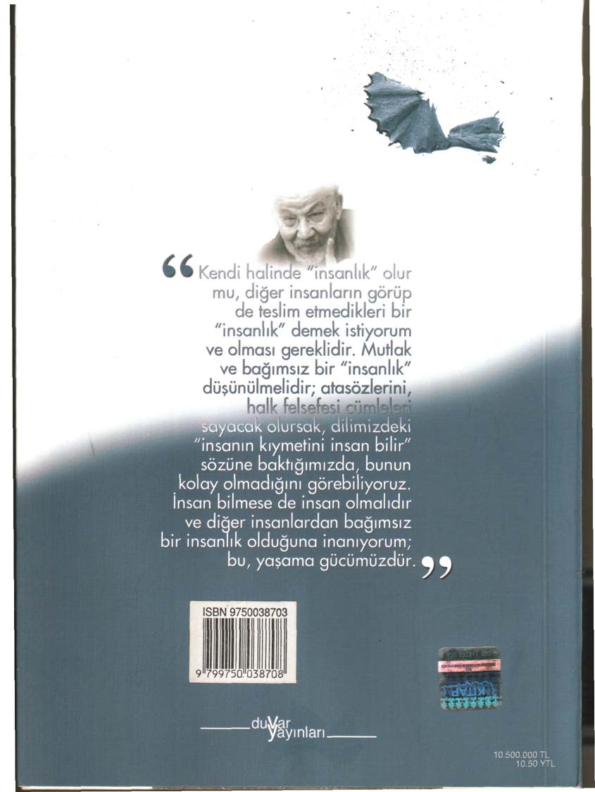
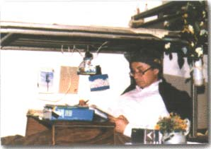
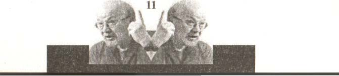

DERLEYEN Hasip Akgül
Aydınlık Gelecek Hareketi'nin katkılarıyla
http://genclikcephesi.blogspot.com

http://genclikcephesi.blogspot.com

Duvar Yayınları
“ Ben cezaevi sırrını
Dostoyevski'de çözdüm;
gardiyanlık insan iradesini
kırma mesleğidir, diyordu.
Tek kelimeyle dâhiyane;
dâhi, çok hızlı görebilendir
ve bu nedenle bazen
görünmeyeni görendir.
Hapsetmenin bir tek
fonksiyonu var: bireyde
istemeyi ortadan kaldırmak.
Dün ve bugün, cezaevinin
esansı budur ve bu da
insanlık dışıdır (...)
Şimdi o demir ranzaya
bakıyorum, ne kadar çiçekli;
her tarafını ve bu arada her
tarafımı çiçekle donatmış
olduğum anlaşılıyor. Bir tek
burun deliklerimde çiçek yok;
sanki duvar ve demirin
cansızlığından, çiçekle
intikam alıyordum. Hep çiçek
istiyordum. Herkes çiçek
istiyordu. Fakat, Dostoyevski,
bir dâhidir ve hapishane,
istemeye düşmandır. “”
YALÇIN KÜÇÜK
Sultanahmet Cezaevi / tekhne
TÜRKİYE BÜYÜLÜ HAPİSHANEM
Yalçın Küçük
I. Baskı, Eylül 2005
© Duvar Yayınları, 2005
ISBN 975-00387-0-3
Kapak : Kemal Buluş
Uygulama : Vahit Akça
iç Tasarım / Baskıya Hazırlık : İbrahim Metin iç ve Kapak Baskı Görünüm Matbaacılık
Lüleburgaz / Kırklareli
0 28841245 74
Cilt
Kısmet Ciltevi O 212 567 52 12
Duvar Yayınları*853 Sokak No: 13 P-10 Özyurtsever İşhanı * Kemeraltı/ İZMİR
Tel/0 232 445 84 15
Fax/0 232 484 88 68
İÇİNDEKİLER
Kaptan * 5
I. BÖLÜM
TÜRKİYE BÜYÜLÜ HAPİSHANEM
Duvar Yazıları * 9
Tanrı * 33
Kişiliğin Büyümesi * 45
Devrim * 69
Aydın * 91
Bilim Felsefesi * 111
Sistem-Tekelcı Düzen * 141
Ulus * 161
II. BÖLÜM
YALÇIN KÜÇÜK ÜZERİNE TEZLER
Ahmet Hakan Coşkun * 173
Can Dündar * 175
A. Murat Gürakar * 177
Anadolu Gençlik Dergisi * 181
Cemal A. Kalyoncu * 197
S. Kemal Yazgıç * 211
Emin Çölaşan * 213
Ertuğrul Ûzkök * 217
Güngör Uras * 221
Melih Aşık * 224
H. Bülent Kahraman * 225
Ayşe Arman * 227
Haluk Şahın * 231
Haydar Işık * 233
Murat Belge * 237
Oral Çalışlar * 239
Nedret Ersanel *241
Serdar Turgut * 243
Ekşi Sözlük'ten * 246
KAPTAN
Hasip Akgül
Yolculuğun en güzellerini büyük kaşifler yapmışlardır. Kaşifler garip insanlardır. Bunlar, dünyanın sınırlarından hep kuşku duyarlar, içinde bulundukları dünyayla yetinmezler; henüz keşfedilmemiş "başka dünyalar"a dair tuhaf bir inançla yaşarlar.
Gariptirler; ancak insanlığın bu türü, hiçbir zaman yalnız, meczup ve münzevi bir yaşam sürmez. Çevrelerinde aynı şeyi hissedecek bir avuç tutkuluyu hemen her zaman yaratırlar.
Olağanüstü tutkuludurlar, dokundukları insana bunu hemen geçiriverirler; bundan olsa gerek gemileri hiçbir zaman tayfasız kalmaz; çünkü başka bir dünyaya özlem, insanın en evrensel duygusudur.
"Başka dünya"yı herkes özler ve düşler; ancak çok azı onu aramaya çıkar. Oysa asıl müthiş olan duygu bu. Tasarlanan bir dünyayı aradıklarından olsa gerek, "normal" insanlar tarafından pek makul ve dengeli sayılmayan bu bir avuç insan, denize koşar. Limandan kimse onlara mendil sallamaz. Normal insanlar geminin limandan ayrılışına bir süre bakarlar. Ufuksuzdurlar. İç çekişleri, giz ve macera dolu bir yolculuğa açılamama ürkekliğinin özeleştirisidir. Kıyıda çökerler.
Bizim keşif gemimizin adı "Toplumsal Kurtuluş" tu. Kaptan'ımız yaşında ikinci, üçüncü kaptanlar, lostromolar vardı; ama çoğunluk genç üniversitelilerden oluşuyordu. Gemimizi özgür bir üniversite olarak görüyorduk. Salt yaşam isteğiyle dolu beyinlerimiz, birbirimizi hisseder ve tamamlardı. İstek ve aramızdaki güçlü temas, rüzgarın ve soğuğun amansız inatçılığına karşı bizi dayanıklı kılıyordu. Gökyüzü; Eylül, Reganizm-Theacherizm saldırısıyla koyu bir karanlığa dönüşmüştü bir de. Üzerimizdeki karagök, gemimizin üstünde ağır ağır dönüyor ve gemi, üstündekilerin sabrını ve acılarını bu keşif yolculuğunda denizin fırtınalı kimsesizliğine sürüklüyordu.
5
Benim de tayfası-çımacısı olduğum, makine dairesinde çalıştığım, güvertesinde subaylık, mutfağında patates soyarak yamaklık ettiğim bu gemide Kaptan bizi hep şaşırtırdı.
Keşfedilmemiş yerlere, diyerek bizi heyecanlandırır, tehlikeli anlarda mucizeleriyle korurdu bizi. Aynı zamanda bir bilimadamı, kitapları elden ele gezen bir düşünür olan Kaptan'ımızı dışardan tanıyanlar onu geçimsiz, sert, zor biri diye bilirlerdi. Oysa kızdığımız, eleştirdiğimiz hatta kolayca kavga ettiğimiz bile olurdu onunla. Bizi anlıyordu. Bizleri, genç tayfaları kırdığı da oldu olmasına ama bizim de benzer davranma hakkımıza sessizce, alıcı bir bakışla yaklaşırdı. Gelişimimizde bu davranışları çok etkili olmuştur onun.
Liseyi yeni bitirmiş çocuklara, kamarasına bir iş dışı ziyaret için gelmişlerse kendi eliyle çay yapıp ikram bile ederdi ve onların bir kaşif adayı olarak "teorik" yaklaşımlarını ilk kez söylenen, ilk kez duyduğu şeyler gibi dikkatim ve merakım kaybetmeden dinlerdi.
Ulaşılmaz diye düşündüğümüz Kaptan'ımıza, bu kadar yakın olurken yaşadığımız, böyle olunabileceğine dair bir gerçeklik hissiydi. "Zor değil, ideal değil hayal ya da tanrı değil; bu, bizim gibi biri, bizden biri." diye düşünürdük. Alt sınıflardan gelen bizim gibi çocuklar için bu önemli bir bilgiydi: Kopmuş dünyalar birleşir. Dünya bütünleşir. Dünya denilen bu gizemli yer yuvarlığında istedikten sonra onun bilgilerine ulaşabilirsin. Ulaşılmaz yok, keşfedilmez yok, imkansız yok! Önyargısız bir merakla ve disiplinli bir çalışmayla işte temas ediyoruz ya.. Kaptan'ımız gibi mümkündür!
İçimizden, onun gibi olmanın milyonda bir olasılık olduğunu düşünenler olduğu gibi bunu, hemen onunla yarışabilecek kadar, gerçekleşmesi an meselesi bir olgu diye görenler de olurdu. Oysa Kaptan'ımız hepimizin kendimize özgü, tekrarlanamaz ve biricik olduğumuzu kendi yaşamıyla misal olarak sunuyordu bize. Bence, kaşif olabilmemizin bunu anlamamızdan geçtiğini anlatmaya çalışıyordu. Kaptan'ın en çok bu yönünü örnek alıyordum, içimizden ona en yakın olmak isteyenler çıkardı çıkmasına da Kaptan bunu bir
"keşif adayı" için doğru bulmazdı. Tek başına kalarak ama hiçbirimizle teması kesmeden ilişki zenginliğini sürdürmenin yollarını buluverirdi.
6
Okyanusun ortasındaki zaman silinir. Sakallar kaç kez uzar ve kesilir? Kaç fırtına yaşanır?
Kaç kez gün doğar, gün batar? Zaman artık bunlarla ölçülmez. Zaman artık gemideki isyan ve sabırdır. Ekmek azalır, direnç azalır, tutku azalır, su azalır, işler ve mızmızlıklar ve şikayetler artar. Her mızmızlık isyanın ve vazgeçişin ayak sesleri olur. isyanlar; takvimin yapraklarıdır, bir yerde düşer. Tarih'i ise sabır yazmaktadır. Kaptan, güncesinin başına her oturuşta biraz daha yaklaştığını yazar. Her isyan sonrasında Kaptan'ın konuşması; yelkencinin, çarkçının yeni gücüdür. Direğin tepesinde gözcünün bir kez daha gerilen gözüdür.
Bu gemi geride kalan için iç çekiş, isyancı için çiledir. Bu gemiyi götürmeye devam edenler içinse dünyanın hiç görülmemiş ve gidilmemiş yerlerine bir gün ayak basmanın, hiç yenilmemiş ve dokunulmamış meyveleri ellerine almaların, hiç bilinmeyen ağaçların, bitkilerin, çağlayanların görülecek olmasının heyecanıdır, duygusudur.
İnsanların ne kadar yaşadıkları, zamanla değil yaşadıkları duygu zenginliğiyle ölçülmeli. Ne kadar farklı duygu yaşamışsa insan, o kadar yaşamıştır. Yolculuk, içimizi zenginleştirme yolculuğudur. Ve keşfedilen, somut, ruhlarındaki ölüm kurduna indirilmiş bir darbedir, ilk defa onların adım attığı topraklarda ölümsüzlük bekler onları. Çağıran budur, işte bu yüzden bu insanlara zamanı, mekanı ve ölümü anlatmak zor. Cehennemden geçmek bile hiçbir şeydir. Çünkü keşfe gidilen, umuyoruz ki, asude bir bahar ülkesidir.
7
Bu coşkumuz deşilmedi mi? Doğruyu söylemek gerekirse eksildiği dönemler oldu.
Gemimize el konuldu. Yasaklandı. Basıldı. Kıyıyı çok özledik. İnsancaydı bu ama kaşifçe değil. Bazen Kaptan'a da bu yollu değişik baskılar yaptılar. Ölüm tehditleri ve suikast planlarını nihayet sürgün ve zor hapislikler izledi. Bize onun hapiste aklını yitirdiği bile söylendi. Sözüm ona yattığı ranzanın üst katındayken gemide zannediyormuş kendini.
Bütün gücünü toplayarak ranzasında doğruluyor, karayı görmeye çalışıyormuş. Böyle söylentiler çıktı. Kaptan'ın seyir defteri aslında bazıların doğru olduğunu da ortaya koymuyor değil.
Bu kitap Kaptan'ın seyir defterinden yapılan alıntılardan oluşan bir bölümle başlıyor. Birinci Bölüm bu. Ranzasının tepesinde, önünde bir meyve kasasından bozma çalışma masasındaki hali, bu kitabın perdesi açıldığında gördüğünüz sahnedir. (Resimde, omuzunda hırkası, kafasında yün beresiyle, karton atıklarından yapılmış abajura benzer okuma lambası altında, okumalardan, sentezlerden, çağrışımlardan o güne ilişkin çıkardığı düşünce özlerini küçük kartlara yazarak ranzanın demirlerine ve yaslandığı duvara iliştirirken Kaptan görülmektedir. Bu resimde, dikkatli bakıldığında denizi de görebiliyoruz.) Bu, başlı başına bir okuma tiyatrosu olarak düşünülebilir. Oyunun asıl aksiyonu, düşünce kartlarında ışık hızıyla geliştirilen fikirlerde, yaratıcı keşiflerdedir.
Kitabın ikinci bölümünde okurların yaratıcı katkıları, kıyıdakilerin eleştirileri ve yer yer aynı denizde keşfe değil de korsanlığa soyunanların sataşmaları var. İkinci Bölüm de budur.
Onların da bizim Kaptan'a gıpta ettiğini bildiğimden, bazılarını kitaba koydum. Kaptan'dan gördüğüm gibi, gelişmeleri için.
Son olarak:
Kaptan'ın ıslığına bakar; gemici torbamız kapının yanında, liman da şurada...
8
Duvar Yazıları
9-10

Dostoyevski'nin insanları neden son derece saf? Sultanahmet'te duvar yazıları yazıyorum.
Aklıma düşen düşünce özlerini yazıp ranzamın duvarına yapıştırıyorum. Yazgı arkadaşlarımın bir bölümü, havalandırmalarda, gelip duvar yazılarımı okuyorlar. Bu sorunun cevabı şöyledir: "Hepsi acıları sevip acıları yaşadıkları için." Dostoyevski'nin insanları acının ateşinin temizleyici gücünü sergiliyorlar.
***
Zaman bir ritm'dir, bir tempo. Saat, bir sarkaç'tır, pandelum! Sultanahmet'te ben, "özgür"
insanın güneşin hareketine dayalı ritm'ini, pratik zamanı reddettim. Daha sonra, aynı yerde elli yıl kadar önce Nazım'ın da aynısını yaptığını buldum.. Geriye kalan kısa veya uzun zamanı geçirmek için mutlaka kendi ritm'ini bulmalısın (...) Çıktığında eksik kalan sevgi günlerini giderebilmek için yüreğini büyüt. Çıktığında bir gün, iki günlük sevmelisin(...) inanmış insanlar, zamanı dünyanın güneş etrafındaki hareketine göre ölçmezler.
***
11
Cezaevi genellikle demir parmaklıklarla simgeleniyor; bana göre cezaevini anlatmıyor.
Cezaevi "kapı" demek. Kapı, kapı, kapı ve 'kapı üzerine kapı' cezaevini anlatıyor. Bir koğuştan sokağa kadar bir cezaevinde en az dokuz kapı veya daha çok kapı vardır.
Normal olarak parmaklık bu kapıların üzerinde de bulunuyor. Küçülüyor ve bunlara mazgal deniliyor. Yeni düzenlemede mazgallar küçük bir deliğe indirildi; küçük de olsa parmaklıklar kaldırıldı. Artık gardiyanlarımızı bile göremiyoruz; delikten veya demir kapının altındaki küçük bir aralıktan muamele görüyoruz.
***
Devlet, İslam'a duyduğu ilgiden de olabilir, benim bir yerde bir Hıristiyan felsefesine sahip olduğumu bilmiyor. Bu felsefe şudur: Eğer mücadele gücün az ya da zayıf ise, yenmek için kırılmak gerekiyor, ilk Hıristiyanların, zayıflıkları içinde, kırılarak ve kırılmaktan korkmayarak kazandıklarını düşünüyorum.
***
12
Hiçbir siyasal içerikli davada hukuk hatası olmaz; siyasal içerikli davalarda hukuk hatası aramanın, düzeni aklama çabalarından biri olduğuna inanıyorum. Siyasal davalarda "hata"
yalnızca bir görüntüdür. "Hukuk hatası" hep düzenin bir tonundan diğerine geçerken ortaya çıkıyor. Bunun uyarıcı olması gerekir; "hukuk hatası" ortaya çıkan bir uyumsuzluğu gidermek için mevcut yasa ve içtihatların yetersizliğini sergiliyor; devletin yeni zorunluluklarla zorunu genişletme çabalarını görüntülüyor.
***
İnsan doğasına en ters ilişkinin ne olduğu sorulursa, "hapislik" diye cevap veririm. Hapse konmanın insan doğasına son derece ters geldiğine inanıyorum. Bunun için de hapse konan bir insanın, vahşi bir hayvan veya kudurmuş bir kedi türünden neden duvarlara saldırmadığına şaşırıyorum. İnsan hapse konduğunda duvarları tırmalamalıdır; insanı böyle düşünüyorum. Böyle olmuyor; uygarlık, bir yandan insanoğluna en güzel soruları sormayı öğretirken, diğer yandan da en insan tepkilerden arındırıyor. Tersi oluyor ve "güzel"yatmak, erdem sayılıyor.
***
13
Belki ağır yazdığım oluyor; hakaret ve saygısızlık benim dışımda kalıyor. Yazgı arkadaşlarımın bütün eylemlerine katıldım; uzun açlık grevinden sonra dünya radyolarının öldüğümü haber verdiğini ben de duydum. Fakat akşamları koyun gibi bizi saymaya astsubaya veya üsteğmene ayağa kalkmamak, bana çok zor geliyordu; saygısızlık olarak görüyordum ve saygısızlık yapamıyordum. "Sayımda oturma grevi"mizden sonra, kıpkırmızı oluyordum ve saygısızlığını bittikten sonra, iki şeritli astsubayın arkasından bağırıp kişiliğine ve üniformasına saygım olduğunu söylüyordum. Çalıştığım için üsteğmeni görmemiştim; not bununla ilgili: Bu üsteğmen daha sonra, aldığı emre uyarak, benim hakkımda orduya hakaret tutanağı düzenledi ve serbest bırakılacağım gün benini yeniden tutuklanmama alet oldu. Avukatlarım, Gülçin, Levent Albayım, Öznur, Ziya Bey, hiç umutlu görünmüyorlardı. Ben ise kendime güveniyordum; henüz kimseye hakaret etmedim ve saygısızlık yapmadım. Üniformaya ve orduya saygımı, yeteri kadar solcu veya devrimci olmamama bağlayacak olabilir; benim sorunum olmuyor. Mücadele ayrıdır, saygı ayrıdır; ben hem devrimci olmadan ve hem de saygılı bir ilişkiden yana tavır alıyorum.
***
14
Aşkta ve savaşta, insanlar, toplumun gübresel ağırlığından kurtuluyorlar. Canlı, düşüncede cesur, düşünen, duyan, insan var. Ölüm var, yaşam var. Ölüm düşüncesi, insanı zamanın ve mekanın dışına çıkarıyor: insan yapıyor.
***
Yıkım, insafsızlık karşısında çaresizliktir.
***
Gelen paraları, komüne verirdik. Her zaman bir miktar ayırırdım. Solcu mahpushane de olsa, çok darda kalanlar, kime başvuracaklarını bilirler; bunlara verirdim. Arada bir de havalandırmada "kantin" açılırdı. Mücadeleci , dirençli ve direnişçi gençlere çikolata alırdım.
Sonradan hissettim; kantinci jandarma eri gardiyanlar ispiyonlarlarmış. Sürgünleri neredeyse benim çikolatalara göre planlamışlar; bunlardan birisi, notlarımda şöyle: "Bizim komünde biri daha gidiyor. Acilci, sevimli, deneyimli, mahpusçu. Yatmadığı hapishane kalmamış. Anlatmaya değer; bir sürgünde eli arkaya kelepçeli olduğu için gardiyan veya jandarma yardımıyla işiyormuş."
15
Bütünlük'e yabancılaştı birey.
Bütünlük akıldan çıktı.
Bütünlük, eziyor.
Benim rolüm cenneti sevdirmek.
Benim rolüm cennet heyecanı vermek.
Benim rolüm, cennetin alınabileceğini göstermek.
Benim rolüm cennet örneği vermek. Cennet örneği yaşamak, insan yaşamak.
***
Bütün demir ranzalar yerinden oynatıldı. Koğuş zaten çok küçük, demir kapıya dayatıldı; artık, jandarma erlerinin koğuşun kapısını açarak içeriye girmeleri ve dövmeleri mümkün değil. Demir kapı, demir ranzalarla tahkim edildi; yorganlarla üzerlerine konuldu. Tabur sürekli mehter marşı çalıyor; mehter marşı kulakları sağır ediyor. Tabur, hücuma hazırlanıyor. Mehter marşını ancak sloganlar bastırabilir; yetmiyor. Şimdi ben F-1
koğuşundayım; Boğaza açılan bir penceresi var. Bütün hapishanede tek'tir, bütün pencerelerin önü kapatılmış durumdadır. Kemal Tahir'in anılarından, Sultan Ahmet Cezaevi'nin nerede ise her koğuşundan karşı sahillerin, Moda Burnu'nun görüldüğü anlaşılıyor.
16
Türkiye'de zaman, cezaların artırılması kadar hapislerin de körleştirilmesi yönünde çalışıyor. Cumhuriyet'te zaman, Sultanahmet cezaevinin ufkunu daraltmak olarak gelişiyor; bir tek. penceresi kalıyor ve bu da, hapishanelerin dış duvarları, bu pencerenin de görüşünü kapatacak kadar yükseltilemediği için duruyor. Buradan, bir süre okuduğum Haydarpaşa Lisesi'ni, bizleri tutuklayan Selimiye Kışlasını görebiliyorum. Sultanahmet'te iç savaş başladığı zaman Selimiye Kışlası'nı görmek mümkün olmuyordu. Pencere camları kırık, hava çok soğuk, dışarısı karlı ve içeriye yağış akıyordu, idare her türlü yiyeceği kesti; artık düşman saydığı bizlere tayın bile vermiyordu. Biraz patates, biraz soğan kalmıştı; kış
için, plastik bidonlarda bol miktarda turşu kurulmuştu. Bir-iki gün, günde bir öğün patates soğanla kavruldu ve yedik. Sonra günlerce ve yalnızca olmamış domates ve biber turşusu yemeğe başladık; sabah kahvaltısında yarımşar domates turşusu ve akşam yemeğinde birer biber yiyorduk. Öğle yemeklerinde sloganlarla karın doyuruluyordu. Birinci Ordu ve Sıkıyönetim Komutanı Orgeneral Öztorun, bizlere tek tip elbise giydirmeye çalışıyordu.
Mehter Marşı on günden fazla sürdü. Kar, soğuk ve açlık on günden daha fazla sürdü.
Taburun barikatları aşması mümkün görünmüyordu ve "biz" açlığa karşı eğitimliydik.
17
Üç günlük, beş günlük, on günlük olanlar bir yana herkesin en azından yirmi beş günlük bir açlık eğitimi vardı. Zaman zaman sloganlar hoparlörlerle verilen mehter marşı bastırıyordu.
Aileler, Sultanahmet cezaevini çevresini dolduruyordu. Bazen yazgı arkadaşlarımın analarını ve babalarını özledikleri anlaşılıyordu: "Analar babalar evlatlarının yanma, analar babalar evlatlarının yanına!" diye slogan atıyorlardı. Ben bu slogana çok gülüyordum:
"Annelerinizi babalarınızı burada ne yapacaksınız?" diye soruyordum.
Bilincinde görünmüyorlardı ve benim de onların sloganlarını bastırmam imkansızdı.
Orgeneral Öztorun, kurmay subaydı ve planlarını yaptı; istihkam birliklerinden yardım istedi, İstanbul'un fethinde surların üstünden Romalılar Grek Ateşi kullandılar.
Sultanahmet'e istihkamdan kaynakçı birlikleri getirdiler. Bir manga asker, önlerinde kaynakçı birliklerin işlerini kolaylaştırıyor; demir kapıları doğrarken, koğuşlardan bir mukavemetle karşılaşmıyorlar. Demir kapı dikdörtgen bir pasta gibi oyuluyor. Mehter Marşı yükseliyor ve askerler, demir ranzalardan oluşan barikatları aşmak için hücuma geçiyorlar.
Silah olarak coplarını kullanıyorlar; her koğuşta ayrı bir meydan savaşı oluyor. Elebaşları daha çok dövülüyor ve tutuklular teker teker alınıyorlar, karga tulumba ve döve döve, kapıaltına götürülüyorlar.
18
Kapıaltında ayrı bir tören var; her tutukluya bir manga asker düşüyor. Tutuklu yerde çarmıha geriliyor, kollarına, başına, vücudunun üstüne bir asker oturuyor. Sonra tek tip elbise giydiriliyor. Sonra ağzı-burnu kan içinde yazgı arkadaşlarım, bu kez koğuşa götürülmek üzere, kapıaltından çıkarılıyorlar. Koğuşla kapıaltı arasında havalandırma var; ön koğuşlar, kapıaltından çıkanları görüyorlar. Havalandırmada üçüncü savaş başlıyor, iki askerin gözetiminde bir yazgı arkadaşım, havalandırmaya çıkınca üzerindeki tek tip elbiseyi çıkarmak için mücadeleye başlıyor. Çıkartıyor ve yırtıyor. Havalandırmada don ve atletle kalıyorlar. Bu kez bütün eşya ve giysilerden soyutlanmış olarak başka bir koğuşa atılıyorlar. Ben de E-1 koğuşuna atıldım. Hiçbir eşyamız yoktu; yalnız atılıyorduk. Hallaç pamuğu gibi atıyorlardı; yalnızca yüzlerini bildiğimiz yeni yazgıdaşlar tanımanın heyecanını yaşıyorduk. Yemek vermeye başladılar; ancak yeteri kadar kaşık vermiyorlardı. Aynı kaşıktan sırayla yemek yiyorduk ve aramızdan ikisi verem tedavisi görüyordu. Nasılsa, bir kutu sandozu bana bırakmışlardı. Bir sandoz kutusundan üç kaşık yaptım. Ben yine pencere kenarına çıktım, yine camlar kırıktı. Kar yağıyordu. Elektrik vermiyorlardı.
19
Sadece gün ışığında ve karlı bir sonbahardan içeriye sızan soğuk bir aydınlıkta okuyabiliyordum. Harekat, 24 Ekim'de (1983) başlamış ve ben not tutmaya yeniden 28
Kasım'da (1983) başlamışım; defterim bunu gösteriyor. Orgeneral Öztorun'un bize açmış
olduğu savaş bir aydan uzun sürmüşe benziyor; öyle anlaşılıyor. Kim kazandı? Cevap verebilmek için biraz daha not ve duvar yazısı aktarmam gerekiyor.
***
Mahpusta en karışık, içimde en hareketli haftayı geride bıraktım. 23 Kasım öncesi üç gün bekleme gerginliğiyle geçti. Çarşamba öğleden sonra tahliye sevinci geldi. Perşembe öğleden önce tahliye sevinciyle geçti. Perşembe öğleden sonra aniden Selimiye'ye götürüldüm.
Tutuklandım. Tahliye engellendi. Yeniden kapatıldım. Hiçbir suçum ve hatam yok. Çok haksız bir tutuklama, anlaşılan henüz sürem dolmadı. Yıkım, insafsızlık karşısında çaresizliktir. Benim çarem var iki gün içimi yakarcasına bir kusurum var mı, diye aradım.
Mutluyum.
***
20
26 Kasım 1983 sabahı saat 04.00'te duvara yazdım: "Çok rahatım. Buna ihtiyacım vardı.
Beni istediğim yere götürecek." Bugün saat sabah 07.00'de okumaya yeniden başlayabildim. Kendime geldim.
***
30 Kasım 1983. Çalışmaya başladım. Neşem geliyor. Bugün 07.30'da hazırım, ancak güneş yok. Okumak çok zor. İki yumurta içtim.
***
2 Aralık 1983. Öğle yer değiştirmem istendi. D'deyim. D-4 koğuşu yer altında, iki kişilik iki katlı ranzanın güçlükle sığdığı bir koğuş. Deli olduğunu iddia eden ve bunun için her olmadık saatte horoz gibi öten, duvarlara tırmanan bir koğuş arkadaşım var. Adı: Şahin.
***
Zor hapislik, güzel aşklar türünden, anatomi ve fizyoloji dersidir, insana kendi vücudunu öğretiyorlar. D-4 yerin bir buçuk-iki metre kadar altındaydı, bir tek penceresi yukardaydı.
21
Ancak sonsuz ve mavi gök'ü görmüyordu; pencereden bir metre ötede, hapishanenin dış
duvarları yükseliyordu. Ranzadan inildiğinde, bu küçük koğuşun tuvaletinin kapısına adım atılıyordu. Çok rutubetliydi. Koğuş arkadaşım Şahin, sık sık sevk alıp hastaneye gidebiliyordu. Hapishanenin delisiydi; delilik raporu alarak az hapis yatmak istiyordu.
Hapishanede çok insan deli taklidi yapar. Ben akıllı taklidi yapıyorum. Belki de bu nedenle ve çok iyi bir niyetle beni, yeraltına deli taklidi yapan Şahin'le birlikte kapattılar.
***
Şahin döndü; ancak dönmeden önce beni yine D Blok'ta bir başka koğuşa fırlattılar. Yine yerin altındaydı; üst ranza, yanındaki diğer üç ranza bitişikti; yanımdaki ve pencereye denk düşen üst ranzada TKP'ye bulaşmış bir karateci yatıyordu. Garipti ve bu bir hakiki deliye benziyordu. En çok fareleri seviyordu ve ben hiç fareleri sevmem. Karateci, eline ekmek geçince bitişik üst ranzaya yatıyor ve pencerenin önüne terk edilmiş bahçedeki tüm fareleri topluyordu. Saatlerce farelerle konuşuyor ve oynuyordu.
***
22
Yazdıkça yeni davalar açılıyor. Yüz bin yıl hapis yatma hesap ve ihtimallerinden bahsediyorlar. Bunun beni korkutması bir yana önemsediğim de yok. Benim buradan çıkmam yetmez; tek başına anlamsızdır. Biz çıkış kapısı olmalıyız. Önemli olan budur.
***
Ancak hiçbir yerde bu kadar yoğun ve verimli çalışamazdım. Kafamdaki pek çok sorunu çözüyorum. Teorik çözümü buluyorum. Teorik çözüm, yıldırım'dır, müthiş bir anahtar'dır, şaşırtıcı basitlik'tir.
***
Öğrenme sevinci olmasa, bu mezarda yaşanır mı? Öğrenme sevinci olmasa, hapislik çekilir mi? Öğrenme sevinci olmasa, mezarda ölüm yenilir mi?
***
23
İç Asya'da atalarımız, günlük gereçleri atları ve sevdiği eşleriyle birlikte gömülüyorlardı, herhalde ölümsüzlüğe inanıyorlardı(...) Ancak gerçekten yaşamı sürdürüyorlar mıydı?
Düşünüyorum ve düşünmek için nedenlerim var; Haymana Zındanı'nda boş koğuş
olmasına ve daha önce bu koğuşun siyasilere ayrılmasına karşın, beni Doğu ile aynı hücreye kapattılar. Ne bekliyorlardı, bilemeyiz; çok küçük olmasının ötesinde önemli bir yakınmamız olmuyordu ve bu nedenle değiştirilmesini istiyorduk, reddediliyordu.
Fakat,mahkeme bazı sarsıcı açıklamalarla etkili olmaya başlayınca, ayırmaya karar verdiler; Doktor Perinçek'ten ayrı bir hücreye kondum. Doğu ile ben, çok kısa bir zaman içinde, Haymana Zindanı'nın eski sahiplerine sağlananların bizden esirgeneceğini anladık.
Kimseyle görüştürülmüyorduk, işte bu sırada İç Asyalı atalarımı hatırladım. Cansız bütün gereçlerim vardı, yaşıyordum; ancak mezarda yaşıyordum. Peki ben burada "yaşıyorsam"
yakınlarının "öldü" dedikleri, İç Asyalı atalarımız, üstelik sevdiği kadınları ve en güzel atlarıyla birlikte gömüldükleri muhteşem mezar-evlerde yaşamıyorlar mıydı? Atalarım en sevdikleri atlarla gömüldülerse, benim de en sevdiğim kitaplarım var; dışardan gözlendiğinde atalarımız kadar mezardayız.
24
Tuhaf bir dirilik var; her yanımda ve içimde. Beynim uyanık, daha az uyuyorum. Hücremde spor yapıyorum. Beynime kan pompalamaya başladım.
Aldığım cezadan mı? Rahatladım. Düzenin barajlarını gördüğüm için mi? Belki hepsi.
Bir de kendime güven tazeledim. Toprağımızda eridiğimi duymaya başladım.
Taşlıkta şort ile sporu denedim, güzel. Çünkü havalandırma çok küçük olduğundan eşofman, tekrar günlük giysi, caydırıcı oluyordu. Böylece sabah sporu daha düzenli olacak, önemlidir.
Doğru, geldim.
Burada müdahale diyorum.
Canlıyım.
Kitap bulmak için saatlerce uzaklıktaki kütüphanelere koşmuyorum. Paris'ten dönmekle iyi yaptım.
25
Her gün teorik bir sorun çözüyorum: Yakın zamanda kolonyalizm ile emperyalizm arasındaki farkı çözdüm, ikisi de tutuş'tur, ikisi de empice veya emprise; ancak tutuş yolları farklıdır.
Bu seçim oy'um bulunmamaktadır. Aklım var ve üç yerdedir.
Şimdi ülkemiz bütün tarihlerin gerisine düşmüştür. Bütünüyle, 19 Mayıs'ın ve aydın olarak 27 Mayıs'ın çok gerisindeyiz. Gençlik olarak, 28-29 Nisan'ın arkasındayız. Sosyalizm olarak 12 Mart'ın öncesindeyiz. Emekçi Kürtler olarak, 12 Eylül'ün gerisindedir.
Kurtuluşumuz, sosyalistlerin, Kürt emekçi eğiliminin ve Kemalistlerin güç birliğinde ve birbirine yaklaşmasındadır. Fakat sadece aklımızın değil kalbimizin kurtuluşa götüreceğine inanıyorum. Bu nedenle birbirimizi eleştirmeyi ancak birbirimizi mahkum etmememizi öneriyorum. Birbirimizden uzak kalabilmeliyiz; ancak birbirimizi itmemeyi salık veriyorum(...) Bütün tarihlerin gerisine düştük. Fakat kökümüz her yerde derine inmiştir.
Derinde kökümüz birliğe doğru yürümektedir. Kurtuluş, hep umulmadık zamandadır.
26
Ulucanlar'ın iç avlusunda, "ring" denilen taşıtta bekliyordum. Önce koyu bir is kokusu geldi, haberciydi ve arkasından üç kelepçeli getirdiler. Benim eşyam çoktu, onlarınki az; onların ağır bir kokusu vardı. Sonradan adının "Ömer" olduğunu öğrendiğim güzel gözlü genç, karşıya oturanın Ulucanlar'a geldiğinden beri üzerindekileri hiç çıkarmadığını söyledi; demek bir yıldır hiç yıkanmamıştı.
Hep ürküntü'yü düşündüm, sadece korku değildi bir de ağlamak gerekmektedir; korkmuş
ve aynı zamanda ağlayan göz ürküntü'dür. Bu ürküntü idi; "dilenci" diyordu ancak tombalacı da olabilir, iki polisi öldürmekle suçlanıyordu, Karabela inanamıyordu: "Bu zavallı adam öldürebilir mi?" diyordu. Üçü de İstanbul'a Adli Tıp'a gidiyordu; üçüncüsü Özbek asıllı bir Afgan'dı. Az konuşuyordu; ancak Türkçe'yi Farsça aksanla telaffuz ediyordu.Ömer konuşkandı.
Adı Ömer, -Ömer'in adından- ve doğum yeri İskenderun -benim yerimden-, ayrıca Balgat'ta oturuyor. Karakusunlar çok yakındır ve eskiden zaman zaman alışveriş yapıyordum.
Annesi bizim İskenderun Arap-Alevilerinden, gözleri saklamıyor; Ömer'in güzel kara gözleri var. Sekizinci Cadde'de çakmak .dolduruyor, çok iyi para kazandığını söylüyor; annesi, orada temizliğe gidiyormuş, avukatı da annesinin apartmanlarından tutmuşlar.
27
Ömer, annesini çok seviyor, "İstanbul'dan hemen dönsem.." diyor; çünkü Ankara da annesi var, sanki annesi, Ulucanlar'da yaşıyor. Yaşamasa da annesi Ankara'da olduğu için Ömer Ankara'dan uzaklaşmak istemiyor; bu kesin'dir. Ömer, öldürmüş. Bıçakla öldürmüş, ancak idam almayacağından emin, çünkü "şahitlerim var, arabama bindirdim, hastaneye götürdüm" diyor. Hem öldürmek niyeti yok ve hem de hastaneye yetiştirmeye çalışmış, kurtulmamış ama, "idam" almam diyor; bir de sarası var. Bunun için İstanbul'a adli tıpa gönderiyorlar, hiç beklemiyormuş, ansızın, "gidiyorsun" demişler. Benim için araba çıkarıldığını bilmiyor; ben Ömer'i Ankara'dan İstanbul'a Adli Tıp'a götürmüş oluyorum.
Karabela adını mahpusta takmışlar, anlaşılan seviliyor, kabadayı havası var, ancak, inandırıcı görünmüyor; bir yerde jandarmalar ekmek içi tavuk alabileceklerini söylediler, ürküntü, garip ses ve işaretler çıkardı; Ömer anladı, ürküntü'yü koruyor; ürküntü: "Bana da alın, param yok, mecbursunuz." diyormuş. Ömer kızdı. "Sus!" diye kükredi, cebinden annesinin gönderdiklerinden bir deste para çıkardı, kendisi ve ürküntü için verdi. Özbek de para verdi. Ben hem yola midemi boş tutarım ve hem de şehirlerarası lokantalarda yememe, korunma'dır; teşekkür ettim. Korunma'dır, temmuz sıcağını ve ring'in çok sıcak olacağını bilerek ceketimi de giymemiştim, müthiş bir ter döküyorum.
28
Bu sözü işte bu zaman incelemeye karar verdim: "Dişi tırnağa takma.." nereden çıkmış, Farsça'da benzeri var, daha anlamlı, işte ben öyleyim, eşyalarım nedeniyle, ellerim de kelepçeli olduğu için düz oturamıyordum, ayrıca insanın elleri kelepçeli olursa ceketini çıkarması mümkün değildir. Terden yakınıyordum fakat bu diş ve tırnak ilişkisinden dolayı, sanki en lüks uçakta yolculuk yapıyordum. Tahammül edilemez bir rahatsızlık duymuyordum, artık tahammül edilmez olmadıkça rahatsızlık duymamayı da öğrenmiştim.
Çok güzel gidiyordum. Herhalde Haymana mezarından uzaklaşmak da beni rahatlatıyordu.
Karabela Ömer, hiç babasından söz etmiyordu. Isparta'ya yerleşmiş, muhtemelen bir Kürt, İskenderun Demir Çelik'te işçi olmuş, oradan annesini bulmuş, emekli olmuş. Balgat'ta yaşıyorlar, tek anne, tek baba ve tek çocuk; fakat bunun dışında, Ömer, babasından hiç bahsetmiyor. Annesini seviyor: "Annem Ankara'da, umarım, bu gece bırakmazlar aynı ringle dönerim." diyor, annesi Ömer'in aşkıdır. Ben ise meraklıyım, bu arada, babasının öldüğünü öğrendim.
29
Bir ara anlatıyordu, "Her halde öleli çok oldu" dedim, "Yok" dedi, yakında ölmüş, gece ölmüş, "Öldürdüğüm babam'dı." dedi. Hiç heyecan duymuyordu, "Bunalıma girmişti."
diyordu, bu sözü, en çok varoş halkı öğrenmiş durumdadır, dizilerden bu sözü çok iyi öğrendiler, işsiz, çok içiyormuş, para yetiştiremiyor, annesinden ve Ömer'den sürekli para istiyor, Ömer, Sekizinci Cadde'de çakmaklara gaz dolduruyor, apartmanlara da bakıyor,
"Ayda dört milyon kazanıyordum." diyor, söylemesinden çok para olduğunu anlıyorum, kendisi de doğruluyor. Babası Ömer'den para istedikçe ve Ömer vermedikçe, Ömer'i dövüyor, sarhoş olduğu için de çok dövüyor, o gece de sarhoşmuş ve Ömer'i çok dövüyormuş, Ömer bıçakla babasını öldürmüş, hikaye budur. Hemen hastaneye yetiştirmiş: "Annem bana şahitlik ediyor." diye ekliyor. Zavallı anne, zavallı Arabo-Türk kadın, ne yapsın, tek verimi, güzel gözlü Ömer'i kurtarmayacak da ne yapacak! Anne, artık Ömer'in anası değil, koruyucu meleğidir ve bu nedenle, Karabela Ömer, belki de benim yüzümden, koruyucu meleğinin mekanından ayrılmak istemiyor, "yer yoktur, bu akşam aynı araba ile dönebilirim." diye umut ediyor. Umut, mahpusçuluğun güzellik uykusudur.
Cebinden bir fotoğraf çıkardı, iri yarı olabilir, ancak şarapçı yüzlü olduğu kesin, Ömer
"babam" dedi.
30
Fotoğrafı ölümünden bir-iki gün önce çektirmiş, gösterdi, gösterirken yüzünde hiçbir acı yoktu, bir sevinç bile vardı. Cüzdanından çıkardı, cüzdanına koydu. Cüzdanını cebine indirdi. Ömer, o fotoğrafın çocuğu, fotoğraf Ömer'in babası değildi. Karabela, babasını cebine koydu. Ring, Gebze Mahpusu üzerinden İstanbul Adli Tıp'a gidiyordu. Temmuz-Ağustos'a yaklaşıyordu. Temmuz, Anadolu ilahlarından, Ağustos Roma diktatörlerinden birisidir. Topraklarımızda, yaklaşıyorlar.
31-32
--------------------
Tanrı
-------------------
33-34
Bilme, irade sahibi olmak ve güzeli sevmek., insanın üç özelliği... insan bilgi peşinde koşan, karar veren ve seven bir yaratıktır, işte biz bu üçlüyü büyütür, kendimize tanrı yaparız.
Tanrı, insanın yarattığı ve insana en uzak yaratık oluyor. Acıması, sevmesi ve üzülmesi yok; tanrı olmak ve yok olmak, birbirine çok yakın ve belki de birbirinin aynı sayılıyor, insanların hiçbir zaman tanrılaşmamasını ve tanrıya benzememesini diliyorum; Tanrı olmak, insanlıktan çıkmaktır.
Antik Atina'da insan, bütün coğrafyaların kesiştiği bir kurtarılmış bölgede, doğumunun trajedisini yaşıyor. İnsan'ın doğumu Tanrı'larıyla savaşıdır. Antik Helen'de insan Tanrı'larına karşı daha açık ve cepheden savaşı kabul ediyor ve yeniliyor. Trajedi ortaya çıkıyor, insanlığın çocukluk döneminde insan, daha kurnaz ve iki yüzlü çıkıyor. Copernicus, Galileo, Kepler, Descartes, Bacon, Newton Tanrıya karşı son derece korkak, kurnaz ve iki yüzlü davranıyorlar. Tanrı'ya karşı söz'lü ve düşünce'li insanın kuruluş ve kurtuluş savaşını verirken aynı zamanda Tanrı'yı sürekli yüceltmekten geri kalmıyorlar.
35
Politika ise daha bellidir. Politikayı sınırda serüven olarak tanımlıyorum.
Politika, iki düşman toprak arasındaki mayın tarlasında danstır.
İlerisi bilinmezdir. Gerisi, bir kez yürünmüş olmasına karşın, karanlıktır. Politika, bu nedenle hep bilinmeze yürümektedir. Ya da politika yürüyerek bilmektir.
Yürürken, düzenlilikleri bulmak ve düzenlilikleri ancak uygularken bilmek: Bu politikadır.
Politikanın kendisi serüven, felsefenin başlangıcı kuşkudur. Bu nedenle, modern felsefenin Descartes ile başladığını kabul etmek gerekiyor; Descartes, on yedinci yüzyılın çocuğu oluyor. Marx, bu yüzyıl ile biten iki yüz yılı, burjuvazinin çocukluk çağı olarak niteliyor.
Modern insanın çocukluk çağı olarak nitelemekten yanayım; insanlığın en güzel çocuklarının önemli bir bölümü bu dönemin ürünüdürler. Bu dönem, bu güzel çocukların ürünüdür. Kısa ve şiir dolu bir kuşku çağıdır.
36
Felsefe, kuşku ile yürüyüp, mutlak olanı bulma işidir.
En mutlak, mutlaka bilgidir,
Tanrının kendisi eninde-sonunda bir bilgidir.
Tanrı yapmak, eninde-sonunda bir bilgi mutlaklaştırma işidir. Felsefe, mekanı boşluk, hedefi sonsuzluk olan, bir bilgi serüvenidir.
Felsefe, kuşku; politika, red ile başlar. Serüvenci yürüyüşün ilk sözü "la ilahe" olmak durumundadır. Tanrı yoktur anlamına geliyor. Politikada ilk adım reddir. ikinci adım "illallah"
olmak zorundadır. Allah'tan başka, anlamına geliyor. Politikada, ilk ve ikinci söz, "la ilahe illal-lah"oluyor. Allah'tan başka tanrı yoktur anlamını veriyor. Bu benim bulduğum, benim yarattığım tanrıdan başka tanrı olmayacaktır, anlamına geliyor; politika varolan bütün tanrıları red ile kendi tanrını yaratıp bulma serüveni olarak ortaya çıkıyor. Politika red ile başlıyor.
Politika değiştirme yürekliliği olarak gerçekleşiyor. Felsefe ise Romalı Şair Horacce'in sözüyle "sapare aude" yürekliliğiyle başlıyor. "Bilmeye yürekli olmak" anlamına geliyor.
37
"Fetret Devri", iki. peygamber ya da padişah arasındaki dönemdir, aslında bir düzenin bittiği ve diğer düzenin gelmediği zamana diyoruz. Latince "interregnum" deniyor. Fetret dönemi mi; kimin nerede ve ne ölçüde ve ne zamana kadar bulunduğunu saptamak zordur. Ahlak ile ahlaksızlığın, masum ile zalimin, peygamber ile şeytanın, şükür ile inkarın, iffet ile fahişenin mümin ile münkirin, kahraman ile hainin, korkak ile cesurun, kucak kucağa yaşadığı bir yerdir. Fetret'te her canlı iki yüzlüdür.
Felsefe ve politika, yaşama yüreklilerinin olduğu zaman ortaya çıkıyor.
Öz arayış, akıl sınırını kabul etme oluyor. Tanrı, bir akılsızlığa yönelmedi; Tanrı akılsızlık. Üç kavram: Tanrı, evren, rekabet. Tanrı, evren, rekabet; akılsızlıkla birleşiyorlar. Evren, hız'ı ve rekabet de piyasayı düzenleme iddiasına sahip çıkıyor. Tanrı, her ikisinin de düzenleyiciliğini reddediyor; dinleri aracılığıyla, zamanın dışına çıkıyor ve piyasayı yasaklıyor. Piyasa rekabeti ortadan siliyor.
38
Rekabet aklı reddediyor ve piyasa rekabetin kökünü kazıyor.
Dinler tarihini yeniden öğrenmeye çalışıyorum, Stalin ile Havari Paul aynıdır. Paul, İsa'dan ayrı bir din kurmuştur, İsa'nın Paul'e kadar yaptıkları, Yahudiliğin hizbidir. Paul'e kadar Yahudiler İsacı olabilir. Paul öyle değiştirmeler yapmıştır ki, Yahudi olmayanların İsevi olabileceğini ilk defa o vurgulamıştır. Bir analoji yapacak olursak, Stalin budur, yeni bir Marksizmi kodifiye etmiştir.
Felsefe bilmenin ne olduğu ile ilgileniyor. Bilme ise jenerik olarak bütünseldir. Bütünsellik, gökten gelmedir.
Hem Antik Atina'da ve hem de modern zamanlarda insan oğlunun bilgi serüvenin başında gök var.
Ancak, ateist düşünceye kadar tanrı ile gök'ü birbirinden ayırmak mümkün olmuyor.
Tanrı ile gök'ün ayrılmazlığı tanrının gökte oturmasıyla ilgili değildir; Bu, insanların konuşlandırmasıdır. Tanrı ile gök asıl sonsuz kavramında birleşiyorlar.
39
Tanrı, sonsuzlaştırılmış insan yüklemidir. Tanrı, insanın üç yüklemi olan sevgi, bilgi ve iradenin sonsuzlaştırılmasıdır. Sonsuzlaştırma, mutlaklaştırma demektir. Tanrı, mutlaklaştırılmış bilgidir. Ancak, mutlaklaştırma sürecinin sonunda bilinmez bir yüklem kazanıyor.
Bu, din ile içice olmasından kaynaklanıyor. Felsefe, dinden doğuyor ve bütün doğumlar gibi, bir ölümcül savaş sonunda nitelik değiştiriyor. Felsefe, doğumuna düşmandır. Dinin afyon olması ise sanıldığından büyük basitlemedir.
Din, bundan çok fazladır. Afyondan çok önemlidir.
İnsanın çocukluk çağı, Copernikus'tan Newton'a uzanan büyük bir yaratıcılık serüveni, felsefenin laikleştiği dönemdir; aynı zamanda, dinselliğin derin izlerini taşıdığı dönem oluyor. Uzun savaş yıllarıdır. Interregnum olarak da niteleyebiliyorum.
40
Laisizm, bir savaş ve aynı zamanda bir güç çözme sürecidir.
Laisizm -bir iktidar kavgasıdır. Bir politik mücadele anlamına geliyor.
Doğru bilgi kimin hükmü altındadır? Dışsallaştırılmış ve mutlaklaştırılmış anlık bilgi demek olan Tanrı'nın mı, yoksa işlemediği zaman canlılığını yitiren aklın mı? Bu soru, Fransa'nın topraklarının kimin mülkiyetinde olacağı sorusuyla bir'dir; biri, diğer yanı oluyor.
Batı'da İslam dahil Doğu'ya sınırlı kalan dinlerde, ruhban sınıfının üst tepeleri asildirler.
Avrupa'da kilise her zaman en büyük ve güçlü feodaliteyi meydana getiriyor.
Feodal mülkiyet ilişkilerine karşı savaş, aynı zamanda laik savaştır.
Bilgiyi kilisenin hükmünde bırakarak, toprağı asillerin hükümranlığından çıkarmak ve böylece ulusallaştırmak mümkün olmuyor. Savaş iç içedir. Batıda mülkiyetin biçim değiştirme savaşı bitince laisizm de gücünü yitirmeye başlıyor. Aydınlanmış Avrupa, yoğun bir dinsellik tutkusuna bağlanıyor.
41
Copernikus'tan Newton'a bir insan köprüsü., kozmos'un sırlarını keşfederken bilmenin de tadına varıyorlar ve hazzını duyuyorlar. Copernikus'tan Newton'a bu insanlık köprüsüyle bilmek, insanın tutkusu haline geliyor. Bu tutku hem insanın eylemlilik alanlarına ve hem de bilmenin kendisine yayılıyor.
Sanki bunlarınki bir ön hazırlıktır; aynı yolla tarihi, insanın ruhsal dünyasını bilmek istiyorlar.
Tarihi ve insanın ruhsal dünyasını bilmek, bilmeyi bilmektir.
Materyalizm, bir bilme yolu ve bir bilimsel bilgi kaynağıdır, insanın doğasını, 'fizyo', düzenlerini bilmek, 'loji', birlikte 'fizyoloji' ile insanın ruhsal devinimlerinin düzenlerini bilmek
'psikoloji' bir arada ele alınınca materyalizm doğuyor. Materyalist epistemolojik okulun, maddenin değil de insanın incelenmesinden doğmasını çok şaşırtıcı buluyorum. Modern Materyalizmin tüm kurucuları insanı inceleyenlerdir; Ancak Materyalizmin bir epistemolojik kural olarak doğabilmesi için, insanın fizik ve psişik
dünyalarının bir arada ve birbiriyle bağlantılı bir biçimde incelenmeleri gerekiyor.
42
Felsefi serüvenlerinde insan önce kendisini oku¬yor. Çocukların da okudukları türden ilk bilimsel kitap kendisi oluyor, insan kendisini okurken bilim yapıyor. Bunu insanın, insanlık serüveninin etkisizleştirilmesi için en büyük çabaların gerek olduğu, en önemli zaaflarından birisi sayıyorum. Felsefe belki de bu zaafı ortadan kaldırma çabasıdır.
Teolojik akıl düzeni de bir akıl düzenidir. Aydınlanma ise bir akıl düzenini red ile bir yeni¬sine geçiştir. Tüm aydınlanmaların başlangıcında red var. Gerçekleştirilmesi mutlaka şiddet ile oluyor. Şiddet sadece süreyi kısaltmıyor; aklın frenlerini de kırıyor. Marx ve Engels, daha çok Alman Felsefesinden besleniyorlar. Alman Felsefesini en iyi kodifiye eden Kant, tam bir aydınlanmacıdır; Aydınlanma, sonsuz eleştiriye dayanıyor. Kant'ırı bütün önemli çalışmaları "eleştiri" başlığını taşıyor ve Marx'ın en önemli çalışmalarının ya başlığında ya da alt başlığında eleştiri yer alıyor. Eleştiri, küçük bir isyandır. Kant, akıl düzlemin¬de, bir isyan başlangıcıdır. Hegel Kant'ın isyanını mutlaklaştırarak söndüren Almandır. Marx, yeni teknolojinin hızlı egemenlik kurduğu bir zamandaki aydınlanmacıdır.
43
Dünyada sağ, hep Marx'ı peygamberlik işlevini üstlenmekle suçluyor. Pratik anlamda pek çok haksız; ancak felsefi planda tartışılabilir bir suçlamadır. Çünkü yalnızca Marx'ın sistemi değil, tümüyle bilim ile Tanrı birbirinin rakibidir. Tanrı, inananlar için bir düzenleyicidir; bilim, Tarik-i Ilm'e girenler için, bir doğada ve toplumdaki düzenlilikleri arama ve bulma çabasıdır. Hem Tanrı'ya inanmanın ve hem de bilime güvenmenin mümkün olamayacağını düşünüyorum. Uyuşmaz iki dünya ve arayış oluyor. Tanrı'ya inanmak için önceden var olduğunu kabul etmek gerekiyor; varlığı tartışma, inançsızlık sayılıyor. Kim ne derse desin, bilimsel çabanın başlangıcında da böyle bir inanç var. Bilim; düzenlilikleri, bunlara yasa diyoruz, aramaktır. Başlarken bir düzenlilik olduğunu düşünüyoruz. Tanrı iyilikçidir. Bilimin doğruları ise devrimcidir. Bilime ve bilimin doğrularının doğa ve toplumu daha hızlı dönüştüreceğine inanıyorum. Bu inançla bulduğum doğruları çekinmeden yazıyorum.
Bilim zenginleştiricidir.
Toplumumuzu ve insanımızı zenginleştirmeyi te¬mel ölçüt sayıyorum.
44
-------------------------
Kişiliğin Büyümesi
-------------------------
45-46
Görmeyince daha iyi görüyorum; Teorik insan, somut'tan uzaklaştığı ölçüde gerçek'e daha çok yaklaşıyor.
İnsanı bir ölçüde de yaşamını risk etmesi insan yapıyor. Ateş arındırıyor; ancak insanı insan yapan özelliklerden arınmamak. Sevmeyi, gülmeyi, inanmayı inat etmeyi unutmamalı (...) Çile, sevda'yı yudum yudum yaşamayı sağlıyor.
Yaşamak; yoğunluk, derinlik, mutluluk demektir.
İnsanın gelişmesinin iki boyutu görülüyor. Bir yanda, Tanrı'yı içinden çıkarıp yerine insan aklını koyma doğrultusu var. Diğer yanda içinden kendini sevmeyi atıp karşısındakini, karşı cins başta olmak üzere, sevmeye başlaması boyutu çıkıyor; insanın gelişimini, doğrultusunu, yönünü ve boyutunu bu ikiliden buluyorum.
47
A-1 Ölümsüzlük ölümdür.
B-1 Bilgi yükü yorucudur.
C-1 Ortaklaşmaya dayanmayan duygulaşma hayvanlıktır.
D-1 İnsanlardan uzaklaşmak, yaşlanmaktır.
E-1 Sovyet realizmi, duygulaşmayı hedef alırken ortaklaşmayı katletti.
F-1 Amerikan düzeni, insanları insanlardan uzaklaştırarak sadece ihtiyarlığı doğurdu.
***
Bilim yolunda, tarik-i ilm, olgunlaşma ile iradenin zayıflaması arasında bir ilişki kurmak gerektiğini düşünüyorum. En uçtan ifade edilecek olursa, bilimadamının anlamada mükemmelleşen aklının, anlamın objesine müdahale iradesini zayıflattığını ileri sürebiliyorum. Bu, her büyük bilimadamı için geçerlidir. Politika, güç toplayıp iktidar yapma eylemi ve sanatı olarak tanımlandığında, büyük bilimadamlarmm pek çoğunun politika dışı kalışlarını bu ilişki ile açıklamanın mümkün olacağını sanıyorum. Büyük bilimadamları eylemsizliğe doğru yol alıyorlar; Einstein ve çevresinin atom bombasının kullanılmasını önlemek için anlamlı bir eylemlilik göstermemeleri de bunu kanıtlıyor.
***
48
Anlamak, değiştirme iradesini zayıflatıyor; anlayan affediyor.
***
İnsan tekelsi dönemde evrim geçirmiş, "küçük insan'” dönüşmüştür. Küçük insan, insandan farklıdır ve insanın küçüğü değildir; küçük insandır. Tekelsi dönemde kim daha çok büyümüşse o daha çok küçülüyor. Büyümek birikimli olmaksa küçük insanı yaratmak, birikimi ortadan kaldırmak anlamına geliyor. Birikim köyde değil kentte, işçide değil burjuvazide, kadın da değil erkektedir; erkek daha birikimli olduğu için daha çok küçülüyor.
Tekelsi dönemde küçük insan cinsel olarak, daha çok erkek oluyor.
***
Düşünmek şaşırmayla başlıyor; şaşıramayanların düşünebileceğine inanmıyorum.
***
Söz "sorumluluk"tur.İnsan, "söz" dür.
Söz, eyleme geçmiş "düşünce"dir.
***
49
Önemli olan ortak işin yapılmasıdır.
İş yapmaktan çok ortak iş yapmayı seviyorum.
Kiminle ortak iş yaptıysam, O'na aşık oluyorum.
***
Sorumluluk, zorunluluk'tur.
***
Sorumluluğundan kaçamamak; insanı insan yapan budur.
***
Sorumluluğundan kaçmak; insanın kendisine ihaneti oluyor.
***
Ortaçağ'da insan, doğayı etkileyemediği ve kontrol edemediği için kendine güvenden yoksundu. Bitkisel bir yaratıktı. Tekelsi dönemde ise insan, toplumu etkileyemediği ve kontrol edemediği için kendisine güven duyamıyor, insanı insan yapan nehrin akışını değiştirmektir; bunun için çaba ve ortak çaba gerekiyor. Ortak çaba başarıya ulaştığı ölçüde insan yükseliyor.
50
İnsanlar neden geleceği hatırlamıyorlar? Geleceği hatırlamak, yaşanmış bir dünyayı sezmektir. Geçmişi hatırlamakla ilgilidir. Geleceği hatırlamak, yaşanmamış güzel bir dünyayı sezmek; aynı ölçüde yürek işi oluyor.
***
Yürek, aklın özgürlüğüdür.Tekeller, geleceğin düşmanı oluyorlar. Geleceği hatırlamayı yasaklıyorlar. Yaşanmış bir dünyayı sezmeyi ortadan kaldırıyorlar.Tekelsi düzende yalnızca geçmiş hatırlanabiliyor. Çünkü tekeller, Ortaçağ'a aşık devlerdir.
***
Sınıflar, içgüdü ve sezgiye sahip midirler? Sınıfların tarihleri var. Sınıfları sınıf yapan tarihleridir. Sınıfların içgüdüleri var; Genellikle savunmaya yönelik işliyor. Tekelsi düzen, sınıfların sezme yeteneklerini kurutmak istiyor.
***
51
Sezgi yüreklinin alanıdır. Yürekliliğin devamlılığı başarıya bağlı oluyor. Tekeller, mülksüz insanın başarısızlığını sürekli yaparak, yüreğini öldürmek istiyorlar. Tekelsi düzen, insanoğlunun en başarısız olduğu dönemdir. Tekelsi düzende var olan başarı, mülk sahipleri ile mülksüzler arasında en eşitsiz bir biçimde dağılıyor. Tekelsi düzen, her alanda eşitsizlik çağıdır; tekellerin Ortaçağ aşkı buradan da kaynaklanıyor.
Başarılı tarihi olmayan sınıf, çok zayıftır; zamanla sınıfsal fonksiyonlarını yitiriyor.
Başarısızlığı tarih yapan sınıf, giderek, içgüdülerine kapanıyor ve hep savunmaya düşüyor.
Başarıyı unutmuş insan sezemiyor. Geleceği hatırlamıyor.
Tekelsi düzen, sıradan yurttaşa başarıyı unutturan bir düzendir. Başarıyı hatırlamayan insan, sürüdür.
52
Hayranlıkta uzaklık var.
Sevgide ortaklık var.
Hayranlık, benim dünyamın dışındadır.
Sevgi, benim dünyamdır.
Ortaklığı duymadan, sevginin olamayacağına inanıyorum.
Köylerde .insanlarımız, sevdiklerine, "ortak" diyorlar. Çocukluğumda, köyümüzde, yaşlı
"köylülerimiz", beni ortak diye seviyorlardı.
Ortak bir dünyada yalnızca gür akan sevgi pınarları olacağını biliyorum.
***
Korku, insanı cüceleştirmek ve körleştirmek için gerekiyor. Cüce ve kör, köledir.
***
Erasmus'un Deliliğe Methiye'de çok güzel söylediği üzere, başkalarının aklıyla bilge olmaktansa kendi hükmümüzle deli olmayı tercih etmek durumundayız.
53
Hep tenor olmak isterim ama anlattığım anlamda tenor olmak isterim, operayı hala çok severim. Bir tenor olur ve onun sesini sahnenin arkasından duyarız, çok uzaklardan hoş bir arya, yavaş yavaş ses yükselir, sahnenin önüne gelir, aryasının sonuna doğru koro başlar ve bir müddet sonra tenorun aryası koro içinde kaybolur. Ben aryası kaybolan tenor olmak isterim. Yani ben emekçi sınıflar içinde erimek isterim, benim başka bir isteğim yok.
Düşünceleriniz dönüştürücüyse sizin düzende kabul görmeniz hiç iyi değildir. Kütle benimsemediği müddetçe, bu düzenin çeşitli yerlerindeki insanlar tarafından benimsenmek istemem, medyayı da kullanmak istemem. Bu anlamda Türk aydınını kınıyorum.
Güven ve irade, ne yazık, pratikten ve dıştan geliyor; bunu artık biliyoruz.
54
Bir soru sormak istiyorum: Kim daha çok küçülüyor? Bunun cevabı çok basit: Kim daha çok büyümüşse o daha çok küçülüyor. Büyümek ise birikimli olmak anlamına geliyor.
Küçükinsan'ı yaratmak, birikimi ortadan kaldırmak anlamına geliyor. Birikim köyde değil kentte, işçide değil burjuvazide, kadında değil erkektedir; daha birikimli olduğu için daha çok küçülüyor. Tekelsi dönemde küçük insan, cinsel olarak, daha çok erkek oluyor.
Promiscuite tekelsi düzen öncesinde, daha çok gelişmiş erkeklerde ve daha az görülüyordu. Birden fazla kişiyi aynı anda sevmek anlamına geliyor; şimdi kadınlarda yayılıyor. Bu yaygınlıkta tekel dünyasının kesikli yaşam ilkesi, sonsuzu aramaya zaman bırakmaması kadar ve belki de daha öncelikle, erkeğin yetmezliğinin etkisini görüyorum.
Tekeller, erkeği daha gelişmiş olarak buldukları için, bunları bürokratları yapmada, ikiyüzlü ve fırsatçı, aynı zamanda son derece yüzeysel yaratıklara dönüştürmede zorluk çekmiyorlar. Tekelsi dünyanın kadını daha az gelişmiş bulması, kadının ve insanlığın şansıdır. Ancak kadın bugün şansına değil yıkımına doğru yol alıyor. Bugün reel sosyalizmin yıkılmasında koşulların yeteri ölçüde gelişmeden gelmesi değil, kapitalizme yetişmek ve geçmek mantığı ile kapitalizmin bütün değerlerini taklit ederek benimsemesi önemli bir rol oynuyor. Kapitalizmin modellerini ve değerlerini taklit, kurtuluş değil yıkım oluyor.
55
Bugün kadın, bir eğilim olarak, kurtuluşuna değil, küçükinsan olmaya koşuyor; kurtuluşunu erkeği taklide bağlayan bir illüzyona sarılıyor. Kadının kurtuluşu küçükinsanı hedef almakta değil, yeni insanı yaratmadadır. Kadının kurtuluşu erkeğe yetişip geçmekte değil, erkeğin üzerinden sıçramakta yatıyor. Kadın, yeni kişiliğini yarattığı zaman kendisini ve erkeği de kurtarabilir. Nasıl? İpuçları mutlaka toplumda vardır. Yöntemi, tekelsi düzenin getirdiği sınırları, toplumdaki ipuçlarına dayanarak akıl ve sevgiyle aşmadadır. Bütün özgürlükleri, sevgiyle zorlamaktan geçiyor. Çok söylenmiştir ve bir kez daha söylemek gerekiyor. Bu düzende, tekelsi sistemde, kadının kurtuluşu mümkün değildir. Tekelsi düzende kadın ancak sürünür. Kadının kurtuluşu sosyalizmdedir. Yeni insan olabilmesinde yazılıdır, Reel sosyalizmin yeni insanı yaratamaması, sosyalizmin değil realitenin bir eksiğidir. Reel sosyalizmin, yeteri ölçüde deneyici ve arayıcı olmamasından kaynaklanıyor. Kadın, kurtuluşu için, çok daha deneyici ve baş-kaldıran olmak durumundadır. Bütün çabası tekelsi düzen ve meşruiyet sınırları içinde kaldığı sürece, bugün bu sınırlar içindedir, kurtuluşuna değil dejenerasyonuna yaklaşır. Kurtuluş için sınırları aşma yürekliliği gerekiyor.
56
Yürümek, Ayzenştayn'ın ünlü filmindeki İvan'a da benzemektir, dostluk acıları içinde yanmaktır, yalnızlaşmaktır, belki dinozor olmaktır; ancak asla iskelet olmamaktır.
Artık yaratıcılık ve kuruculuk anahtarı bizdedir. "Biz" ise kafamızdaki tabuları, beynimizdeki hapishaneleri kırarak işe başlamak zorundayız. Bir yıkılışın sağladığı özgürlüğün tadına varmak zorundayız. Hüzün, yıkıntısının altında kalıyor; sevinç, "yeni"yle birlikte geliyor.
Gelişmiş, geri kalmışa dönük bir projektördür. Gelişmişte açığa çıkmış yasalar, geri kalmışta gizlidir; embriyonik haldedir.
Yaşamak, bir dünyaya gözleri kapamalı ve bir başka dünyaya bakmaktır; yürek istiyor.
Yaşamaktan korkmak, yozlaşmak oluyor
57
Mülkiyetin tabanında korku vardır. Korkunun kaldırıldığı bir toplumda cimri de özel mülkiyet de olmaz.
Korkak mutlaka cimridir. Özel mülkiyet, biriktirilmiş cimriliktir.
Evlilik, en gizli özel mülkiyettir.
İster imam nikahı olsun, ister kilisede tamamlansın ve ister laik yerel yöneticiler tarafından imzalansın, nikah, bir borçlar hukuku sözleşmesidir.
Temelinde birlikteliği başlatmak değil, sürekliliğini güvence altına almak var.
Nikah, sevginin tükeneceği korkusudur. Bu nedenle sevgiyi tüketmektir.
İki cinsin bir olması ancak yaklaşımda sonsuzluk varsa insana layıktır.
Birlikte yaşamak, bir serüvendir. Her an birbirini yeniden keşfetme yürekliliğidir.
Her an yeni ise, birlikte olmak, sonsuzdur. Sevgi, ancak yüreklilikle mümkündür. Aşk, ancak sevdiğine gökleri zaptedebilenin hakkıdır.
***
58
Esaret zincirinden hakkı ya da özel mülkiyet boyunduruğundan emekçileri kurtarmak göğü zaptetmekle özdeştir. Gök zaptetmek güven kazanmaktır. Güvenli olmayanın sevme gücü yoktur.
***
Tekelli düzende her gün daha edilgen olan birey, güven kavramından hızla uzaklaşmaktadır. Bu, sevginin, toplumdan ve kutsal aileden kaybolması anlamına geliyor.
Tekelli düzende bireyler, korkularından kurtulmayı düşünemeyecek kadar korkularıyla evleniyorlar. Korkularıyla, katolik nikahı ile evlidirler. Başka evlilik istemiyorlar.
Sosyalizme ulaşmadan önce, tekelli düzende kutsal aile çözülüyor.
***
Sevgide ortaklık, saygıda uzaklık var. Tekeller ortaklık dünyasının kökünü kazıyorlar, insanlıktan uzaklaştırdıkları insancıklara yalnızca tekellere karşı bir saygı'yı bırakıyorlar.
59
Macunlaştırdıkları, pirzola yaptıkları insanların sevgi pınarlarını kurutuyorlar; aşkı kemire kemire yuvarlak çakıl taşlarına dönüştürdükleri insanların veya sellerin rastlantılar sonucu yan yana getirdiği iki çakıl taşının yuvarlak temasına benzetiyorlar. Aşk, insanın sonsuz'u bulma serüvenidir. Sonsuz ampirisist, ancak hiçbir zaman güncel olmayan bir yazgı'dır; mutlak tarih duygusunu içeriyor. Bütün aşıkların, aşklarının "ebediyete kadar süreceğini"
düşünmeleri buradan geliyor; ebediyet, belki de insanoğlunun en canlı, en gerçekçi ve en gerçek aldatmacası, oluyor. Buna ihtiyacı var.
Güncel'i reddedebilmesini, güncel'in geçiciliğini görebilmesini sağlıyor; tekelci aşama, insan olma ile devrimci olmayı özdeşleştiriyor. Macunların sevebileceğini düşünemiyorum.
Pirzolalar öpüşemezler ve iki yuvarlak çakıl taşının tesadüfi temasına aşk demlemeyeceğine inanıyorum. Tezi yazıyorum: Yumuşak insanın sevmesi mümkün değildir. Aşk, katı insanın harcı'dır. Aşk, dişlilerin birbirine geçmesidir. Sevgi karşılıklı olarak bilmektir ve derinlikleri duymaktır. Sevgide ortaklık ve saygıda uzaklık var. Tanrı'lar ortak olamadıkları için sevemezler ve uzak oldukları için de sevilmezler. Saygı sevgi'nin düşmanıdır.
60
Güncel olmayan, tarihçi ve kalıcı sevgi için, aşk için, yalnız arada bir uzaklaşmayı sağlayacak ölçüde saygı gerekiyor; saygı'nın çok azı kalıcı yapıyor ve fazlası her türlü sevgiyi öldürüyor. Aşk, dişlilerin kenetlenip açılmasıdır. Kenetlenmişlerin geleceğe yürüyüşü oluyor.
Çözülen Sovyet Sosyalizmi'nin, çevre ülkelere, bu kadar fahişe ihraç edebilmesi son derece düşündürücüdür. Bunların.tamamını maddi sıkıntılarla açıklamak mümkün görünmüyor; realitesinde cinsel oburluğu özgürlük olarak görmesinin etkisinin daha büyük olduğunu düşünüyorum.
Güven'i anlatmam gerekiyor; son çözümlemede akılla pek ilgisi yok. Çünkü güven, en çok akli kanıtların olmadığı zamanda ortaya çıkıyor, işe yarıyor veya çıkmıyor, yokluğu bile duyulmuyor. "Güvenli olmak" çok öğütlenir; nasıl olacağı pek gösterilmiyor. Zor olduğu için; güven, belki de, en çok, koyu karanlıkta elektriklenme ile aydınlığın geleceğine akıl dışı bir inanç olarak anlatılabilir. Düzlükte, böyle bir inancın yokluğu duyulmayabiliyor.
61
Güven, bunalım dönemlerinde gereklidir; böyle dönemlerde yokluğu yorumlanabilir.
Güven, bunalım dönemlerinde saflığı koruyarak çıkabilmenin; güven, bunalımı aşabilmenin güvencesi oluyor. Hiçbir nesnel kanıt yokken, "ben bunu atlatabilirim" diyebilmektir. En büyük olumsuzluklar karşısında, "ben ayakta kalabilirim" diyebilmektir. Güven, kesinlikle kendine güven'dir. Güven; başkasına güvenmemektir. Güven, kendi gücünü saf tutabilmek oluyor. Güven, en çok, işsizlik ve ölüm sağanaklarıyla gelen bunalım dönemlerinde, bir eter türünden her yere sinmiş korku zamanlarında, gerekli oluyor ve eksikliği duyuluyor.
Eksikliği, en çok kendi gücüne inançsızlık olarak ortaya çıkıyor.
Korku, hareketsizlik. Korkak, taş kesiliyor.
Taş'ın ahlakı yok, hareket etmiyor.
Özgür insan ahlaklıdır; özgürlük, bir eylemler demeti oluyor. Özgür olmayana ahlak gerekmiyor. Ahlaklı olmayan özgürlüğü ne yapacak; taş'ın bu yüzden ahlakı yok. Olmuyor.
62
Hain yalnızca kötü insan değildir; kötü'dür ancak aynı zamanda korkak. Her kötü hain değildir; her hain mutlak korkak.
En büyük korkak, yaşamaktan korkandır; en büyük hain yaşama korkandan çıkacak.
Yaşamak, yaşamın dipsiz uçurumlarında dolaşmaktır; yaşamak ise karanlıklardan korkmamak.
Yaşamak, karanlıklarda görmekten korkmamaktır; akıl, gözün bittiği her yerde görme demek.
Rahat gerekçesiyle rahatlık zorlanınca, utanmazlık başlıyor.
Bizimki tarihe eleştirel bakan, emekçisine sanatla yaklaşan, hep ortaklığı arayan bir oktur.
Bizimki emekçilik, sevgi ve ortaklık üzerine bir hat oluyor.
63
Beraberlikler var, evlilikler olur, yıllar sonra orada hiçbir ciddi sorun olmadan bitiyorlar.
Neden?
Çünkü dünyalar küsüyor.
Dünyaların küsmesi ne demek? Aynı dünyaya bakıp tam zıt dünya görmektir; Dünyaların küsmesini böyle anlıyorum.
Bu bir ayrılıktır.
Sevgi, ışık türünden kendisini çoğaltan değilse nedir? Ben bunu her gün yaşıyorum; kalpleri taş yüklü olanlar, başka halkları sevdikçe kalplerinde sevgiye yer kalmayacağını sanıyorlar; halbuki insan kalbi sevdikçe büyüyor. Ben topraklarımızın zenginliği olan diğer halkları sevdikçe kendi halkımı da daha çok seviyorum.
"Tek başıma kendimi ne kadar geliştiririm?'' değil,
"Kendi başıma başkasını nasıl geliştiririm?" ilke budur.
Sevginin kaynağı ortaklıktır.
Sevmek bir başkasını geliştirmektir.
64
Aşk'ın kaynağı sonsuzu görebilmektir. Aşkta sonsuzluk ve süreklilik, başlangıç önermesidir. Sonsuz kavramı olmadan aşkın doğması imkansızdır ve tarihsel olarak da doğmadığı biliniyor. Ayrıca aşkta bir çekirn söz konusudur; çekim kavramı için önce insanın hareketliliği kavramı söz konusu oluyor.
***
A-1 İnsanın gelişmesi, tanrıyı içinden çıkarıp aklı koymasıdır.A-2 İnsanın gelişmesi, kendisini sevmenin yerine karşı cinsi sevmesidir.
B-1 Sanatçı, kendi içini dışarı çıkarandır.
B-2 Sanatçı, ilkel insanın görkemidir.
C-1 İnsan başı, harikadır.
C-2 insan vücudu mükemmeldir.
D-1 Harika baş, Tanrı'yı ve kendisini en çok çıkarandır: Bilim adamı.
D-2 Mükemmel insan, sanatçı-bilimadamı'dır.
D-3 Bu devrimcidir.
65
"Özeleştiri" sistemine karşıyım, özeleştirinin özünde Hıristiyanlığın günah çıkarma pratiği var; bunu Bolşevikler, değiştirip geliştirerek yaydılar. Bana göre çok kötü yaptılar.
İnsanların büyük kalabalıklar önünde, hatalarını kabul etme adı altında aşağılanması ve giderek kendisinde kusur bulma ayinine kaymasını, arkasından da bütün görevlerinden ayrılmasını çok onur kırıcı buluyorum.
***
A- 1 Tembellik, inançsızlıktır.B- 1 Tembellik, yeni düzene inanmamaktır.
C- 1 Tembellik, eski düzene bağlılıktır.
D- 1 Az çalışan, ufku dar ve sınırlı çalışan, güvensiz olandır.
Kartlar ile çalışıyorum, okuduğum kaynaklardan önemli bilgileri paragraflar olarak kartlara alıyorum. Ayrıca kendi düşüncelerimi de kartlara geçiriyorum. 24 Eylül 1992 ve 17 Eylül 1992 tarihli bir kart:
"A- 1- İnsan, başkasını beğenirken başkasında olanı beğenir.
66
B- 1- Umudu olanların, korkusu olmaz.
C-1- Korku, aklın durmasıdır.
D- 1- Umut, aklın zorlanmasıdır."
***
Birey; tarihin belli bir kesitinde ortaya çıkan, hiçbir yer ve kişiye bağlı olmayan varlıktır.
***
İnsan başı, insana güzelliğini veren yanıdır.Ancak ne yerde sürünen insan ne ezilen insan başı güzeldir.
Güzelliği yükselişindedir.
insan başı yüksekte güzeldir. Hep yüksekte; bunun anlamı hep yükseğe kalktığı ölçüde güzel olmasıdır.
Başını kaldıran insan ve insan başı güzeldir.
***
Sevmek güzel görmektir.
Aşık olmak birlikte güzelleşmektir.
Tek platonik olamayacak şey aşktır.
Her büyük aşk bir büyük seçimdir.
67-68
-------------------------
Devrim
-------------------------
69-70
Her devrim, bir yeni bilgi teorisidir.
***
"Revolution" sözcüğünün tam karşılığı "devrim” değil "dönüşüm" oluyor; "Revolüsyon"
sözcüğü ilk kez siyasette değil, astronomide ve gök cisimlerinin dönüşümünü anlatmak için kullanılıyor. Bilimde büyük devrimin başlatıcısı "Copernicus"un kitabının başlığında, dünyanın döndüğünü anlatmak için kullanılıyor.
***
Her tekrarda bir yenilik var. Olmalıdır. Belleklerin silinmek istendiği, bellek silmenin akıl değiştirici bir seferberliğe dönüştürüldüğü bir zamanda, "tekrar" en cüretli iş sayılmalıdır.
Dünya'nın döndüğünü söylemek, her gün söylemek, ısrarla söylemek, korkmadan söylemek, bugünün en önemli görevi oluyor.
71
Teorinin kapalılığında, zorunluluk-özgürlük ilişkisi son derece önemli bir yere sahip görünüyor. Bilimsellik, kaçınılmazlık ve zorunluluk dernektir; Özgürlük, bunun diğer yüzü oluyor. Düzeni tasarlamak ve iktidarı politik müdahale ile almak, özgürlüktür; bu, zorunluluktan kaçınılmaz bir biçimde çıkıyor.
***
İnsanlığın çevre kirliliği veya nükleer patlamalara ya da ozon tabakalarının delinmesi nedeniyle değil, devrimsizlik nedeniyle sona erme tehlikesiyle karşı karşıya olduğunu düşünme eğilimindeyim (...) insanı insan yapmak için sıçrama zorunlu oluyor. Devrim insanın sıçramasıdır; devrim, yapanı da büyüten geliştiren bir süreç olarak ele alınmalıdır.
***
Önemli olan başka dünyayı kurabilmektir, insan, dünya kurmaya yatkındır. Devrimci kurduğu dünyada yaşayabilmelidir. Bütün hücreleriyle kurduğu dünyaların "yeni" adamı olmalıdır.
72
Şizofrenler hep yeni dünya kuruyorlar ve kurdukları dünyada yaşıyorlar. Ancak dünyalarının akılları yok ve sık sık yeni dünya kuruyorlar. Şizofrenler tutarlı değiller ve ısrarlı olamıyorlar; toplum, fırsat buldukça şizofrenleri akıl hastanelerine kapatıyor.
***
Toplum; devrimcilere, akıllı ve inatçı şizofrenler olarak bakıyor. Hep hapse kapatıyor ve fırsat buldukça başlarını vücutlarından ayırıyor.
***
Tocqueville, 1848 Şubat ayında Paris sokaklarında yürüyen insanlar değil, yürüyen insanlara baktığında, hareket halinde opinions armees görüyor. Aslında insan değil düşünce silahlanıyor; bunu anlatmak istiyor. Tocqueville, yürüyen silahlı kalabalık, silahlı düşüncenin yürüdüğünü düşünüyor.
73
Yoğunlaşmış düşünce eylemdir; Yoğunlaşmış eylem teori.
***
Ben hep, güven'in de teorik değil pratik olduğunu yazıyorum. Hem güven hem de irade için umut, gerek koşul'dur, yeterli değil; ancak mutlaka gerekiyor. Yeni bir düzene umut, irade'yi besleyen vitaminlerin başında yer alıyor; yeni düzen, mevcut olandan, fark edilir ölçüde yeni ve uzak olmak durumundadır. Bu nedenle mücadele edilen ile yeni düzen arasındaki farkı hep ortaya koymak. yeni'yi açmak ve uzaklaştırmak, hem başarı ve hem de irade yaratmak için son derece gerekli olmaktadır. Bütün büyük peygamberler bunu çok iyi anladılar ve belki de sadece bunu biliyorlardı.
***
Ütopya, aklın egemen duvarlarını yıkabilmektir.
74
Revolüsyon ile reformasyon arasında ne fark var? Pek çok örneğe bakıldığında şiddet, kütlesellik, sınıfsal değişim, revolüsyon ile reformasyon arasında kesin bir çizgi çekemiyor; eylemin çok kısa bir zaman arlığında yoğunlaşması anlamında hız, revolüsyon ile reformasyon arasında daha net bir çizgi çekebiliyor.
Bu çizgiye başka bir açıdan da bakılabilir: hak alanlar ile hak verenler sınıfının, şiddeti ve kütleselliği taşıyan ve sınıfsal değişimi kolaylaştıran hareketi olarak düşünmek gerekiyor.
Bu açıdan bakıldığında, hem Martin Luther'in "re-formasyonu" ve hem de Kemal Paşa'nın Kemalizmi, hak verenlerin hareketi olarak ortaya çıkıyor. Birincisinin adı üzerindedir ve ikincisini de aynı renkte ele almakta daha büyük bir doğruluk buluyorum; ancak burada üzerinde durmak istediğim bunlar ve içerdikleri doğruluklar değil; hak alanlar ile hak verenlerin iki ayrı dünyayı oluşturduklarını vurgulamak istiyorum.
Hak vermeyi meslek haline getirenler hak alma yoluna çıkmazlar.
Hak alma mesleği, hep itici ve zorlayıcı bir dinamiğe sahiptir. Hak vermenin profesyonelleri, sürekli frenlemeyi-durdurmayı kişilik haline getiriyorlar, insanlar, aslında, yaptıkları işin kişilikleridirler.
75
Sermayedar, kistleşmiş sermaye olarak tanımlanıyor. İçi ise kişilikleşmiş iş, çevresini aşmaya başladığı anda revolüsyon ve hak alma mesleğine girmiş oluyor.
İnsanların en ilkelleri, dindarlar, geleceklerini cennette görüyorlar. Güzel insanlar, sıradan insanlar, geleceklerini çocuklarında görüyorlar. Gelişmiş insanlar, aydınlar, geleceklerini ellerinde görüyorlar ve ellerini beğeniyorlar. En gelişmiş insanlar, solcular, geleceklerini yeni bir düzende görüyorlar ve yeni düzeni pek güzel buluyorlar.
Fransa'da XIV. Louis İngiltere'de VIII. Henri, toplumsal hayallerin önündeki yüksek duvarları yıkabilen tarihin kaydettiği önemli despotlardır. Böylece, büyük aydınlanmanın kapılarını da açmış oluyorlar. Bunlardan VIII. Henri'nin Ütopya sözcüğünü de yaratan ilk büyük ütopyacı Thomas More'u idam etmesi çok ilginçtir.
76
Ancak daha sonra tarihin kaydettiği önemli aydınlamacıların hepsinin aynı zamanda despot olmaları şaşırtıcı değildir. Eski aklın duvarları güçlü ve yüksek ise bu var olan aydının düzeninde bağnaz ölçüde hoşnut olması demektir; aydınlanmacı despotik yollara başvurmak zorundadır. Her aydınlanma bir aydınlar iç savaşıdır. Ölümlüdür.
Red, bir yeni bilme düzlemine başlangıçtır. Ütopya, aklın toplumsal duvarlarını yıkarak aklı güçlendirme işidir. Kurgu, teoridir.
Top, bütün silahların en inatçısıdır. Görmeyerek atış yapar ve cepheyi sürekli döver; top önce moralce yıkmayı amaçlıyor. Toplar, dövmek için atılıyor.
77
Devrimci, dağlar kadar büyük kayalar üzerindeki kılcal damarlar kadar ince yarıklardan bir narin dağ çiçeğinin, yaşam ile ölüm arasında mikroskobik titreyişlerinden mesajlar alabilendir. Devrimci politikacı bu mesajları güce yüklenmede, güç biriktirmede kullanabilendir.
***
Büyük aşık, büyük bilimadamı, büyük politikacı, seçmecidir.
Seçmek, sadece pazarda alacağını bilmektir.
Seçmek; gerçekte, reddetmektir.
***
Devrimci politikacı; kendisiyle düşman merkezler arasında eylemli-bilgi oyunları kuran ve oynayandır.
Her eylem, bir bilgi akışı ya da radyasyonudur.
Mutlak cevabı vardır. Dağ çiçekleri bile habercidir. Haber bir eylemle de gelebilir.
Devrimcimerkez ve düşmanmerkez bir sıkışık sistemdir.
Bu eylemin cevabı, eylemli bilginin kırılarak ya da yansıyarak gelmesi sonucunu da doğurur.
78
Böyle durumlarda devrimci politikacı için radyasyon bilgiyi tekrar kırmak veya tekrar yansıtmak zorunludur.
Devrimci politika, eninde-sonunda, bir bilgi sorunudur. Devrimcilik, eninde-sonunda, epistemolojik süreçtir.
***
Düşünmeyi tamamlamayı, eyleme dönüştürmek olarak anlıyorum.
***
Yirminci yüzyıl başlarından başlayarak, altı siyasi partiyi seçiyorum. Parti, taraf olmak ve disiplinli bir biçimde bir tarafta güç'ü yığmak anlamına geliyor; yazılı bir tüzük ve program ile formel örgütlerin olup olmaması partiyi tanımlamak için gerekli olmuyor.
79
Bu altı partiyi iki kategoriye ayırıyorum. Bir yanda CHP, DP, TİP var. Diğer yanda İttihat ve Terakki, Türkiye Halk Kurtuluş Partisi ve Partiya Karkeran Kürdistan var: Altısının ortak özelliği önemli olmalarıdır, ikinci olarak kurulan Türkiye İşçi Partisi'ni ve diğerlerini önemli bulmuyorum. Cumhuriyet Halk Partisi, Demokrat Parti ve Türkiye İşçi Partisi, hep yaşlı sayılan kuşaklar tarafından kurulmuştur. Birincisinin kurucuları, emekli generallerdir ve ikincisini emekli başbakanlar kuruyorlar. Üçüncüsünü emekli profesörlerin kurduğu pekala söylenebilir; her üçünün de kurucularının yaşlarının elli yılın üzerinde olduğunu söylemek iyi bir genelleme olabiliyor. Diğer üçünü ise İT, THKP ve PKK, üniversite öğrencileri kurdular.
Birinci grup, kesinlikle legaliteyi ilke bildi. Zaman zaman şiddeti kullanma yollarına geçseler de barışçıl politikayı seçtiler, ikinci grup, başlangıcında gizliliği benimsedi. Her üçünde de şiddet, politikalarının en önemli yöntemi sayıldı. Bu üçü, şiddetle kuşatıldıklarını düşünüyorlardı ve şiddet kuşatmasını aşabilmek için şiddet kullanmayı kaçınılmaz görüyorlardı.
Birinci grup, sınırlı ufukludur. Komintern terminolojisini kullanacak olursak CHP, DP ve TİP, miyopturlar; ancak önlerini görebiliyorlar, coğrafyaları çok dardır. Estetikleri ise benzemeye dayalıdır. CHP, Fransa'ya; DP, Amerika'ya; TİP, Sovyetler'e benzemeyi amaçlıyor; uzak amaçtır.
80
Her üçü de, Fransız İhtilali'ni, Amerikan İhtilali'ni ve Ekim Devrimi'ni yok sayıyor: Bunlar olmadan benzeyebileceklerini düşünüyorlar. Bunların belirlediği coğrafyada var olmayı temel yasa sayıyorlar, İttihat ve Terakki'nin ufku geniştir; bakış'ı, sonsuza yöneliyor..
Avrupa'dan sürülmüş olmayı kabul ediyor; iç Asya'daki ilk yurtlara doğru islami ihtilaller düzenlemeyi planlıyor. Hindistan'ın uçsuz derinliklerini ellerinde tutabileceklerini hayal edebiliyorlar.
THKP geç kalmış bir dünyadaki bütün ihtilalci patlamaları kendisinin sayabilen bir nefes'tir.
sadece bir soluk veriştir; soluğu kendisinden daha uzun ömürlüdür. Küba, Latin Amerika, Vietnam, Asya, Filistin ve Afrika bu gençler için, birlikte nefes alınan, conspiration, topraklardır.
***
İnsan aklı sonsuza yatkındır.
İnsan yürüyüşü, sonsuza yöneliktir.
Sonsuza bakmayan her yürüyüş tökezlemeye ve düşmeye mahkumdur.
81
Cennet düşüncesini, insandan ayırmak mümkün değildir.
Cennet, dinselliğinden çıkarılabilir; ancak insandan ayrılamaz. Sosyalizm, insan aklının didikliye didikliye sonsuza akışının en felsefi ifadesi oluyor.
Bir sosyalizm, kendisini sonsuzlaştırma kaygısından uzaklaştırdığı zaman bitiyor: Sovyet sosyalizmi, kendisini sonsuz olarak çoğaltmaktan vazgeçtiği anda bitmeye başladı.
Lenin'in "savaş için bir arada yaşama" ilkesinin, büyük bir yanlışlıkla, "barış içinde bir arada yaşama" olarak formüle edilmesi bu bitişte önemli bir yere sahip görünüyor.
Sosyalizm, kendisini, sonsuzlaştırma amacından vazgeçtiği sürece hiçbir yerde sosyalizmi sürekli yapamaz; bu sosyalizmden vazgeçmek anlamına geliyor.
İnsan, sonsuzluk peşinde koşmaya mahkumdur. Sosyalizmin çürüdüğü yerlerde dinselliğin beklenmeyen sıçraması, dinlerden değil, insanın sonsuz erdeme mahkum olmasındandır.
Sovyet sosyalizminin çürümesinden Hıristiyan ve Islamik bağnazlığın fışkırması, insanlığın sosyalizme ne kadar yoğun bir biçimde mahkum olduğunu gösteriyor. Cennet kurma, insan yaşamının yüklemlerinden birisidir.
82
Sonsuzluğa yatkınlığın sonuçlarından biri olarak ortaya çıkıyor, Diğeri, sevgi ve daha doğrusu aşk oluyor.
Aşk, sonsuzluğu barındıran sevgi olarak tanımlanabilir; sevgiyi ise birlikte gelişmek olarak tanımlıyorum.
Sovyet sosyalizminin çözülmesinde, sevgiyi daha doğrusu aşkı, çıkarmasının çok önemli bir rolü olmalıdır.
Sevgiyi, sosyalizmden çıkarmak, insanı sosyalizmin dışına itmekle birdir.
Ortaklık olmadan sevgi ve sevgi olmadan ortaklığı düşünemiyorum.
Kardeşlik ise en büyük ortaklıktır. Mülkiyet ve irade düzeyleri önemli ölçüde farklı olanların kardeş olmaları mümkün değildir; heterojen irade ve mülkiyet düzlemlerinde kardeşlik¬ten söz etmenin aldatmaca olduğunu düşünüyorum.
Aşk, insanın birey düzleminde sonsuzu yaşamasıdır.
Sosyalizm, insanın toplum ve sınıf düzleminde sonsuza koşmasıdır. Kardeşlik, insanın ulus düzleminde sonsuz beraberliği aramasıdır.
83
Türkiye solu bölünmemiştir. Fakat Türkiye solu güçsüzdür. Çünkü derinliği yoktur.
Türkiye'de şimdi görkemli 1961-1971 döneminden çok daha yaygın bir sol birikim vardır.
Yaygındır. Kuzeyden güneye, doğudan batıya Türkiye yüzeyindedir. Türkiye yüzeyini sol, bir demir tozu gibi örtmüştür. Bir kağıdın üzerindeki demir tozu gibi Türkiye yüzeyine saçılmıştır. Şimdi toplayacak bir mıknatısa ihtiyaç vardır. Mıknatıs, teoridir. Derinlik ve özdür. Mıknatıs tartışmadır. Toplayacak olan tartışmadır. Üstelik de teorik tartışma.
***
Türkiye'de köycülük, halkçılık ve Türkçülük, yaklaşık olarak aynı tarih kesitinde eyleme dönüştü; iç içe girdi, Içeriklerindeki ayrılıklara rağmen, aynı programın çeşitli aktivıteleri göründü ve özdeşleşti. Aydın Üzerine Tezler'de bir bölümde ayrıntıyla işlenen, fakat bir çok bölümde bir leit motıv işlevi gören şu tez gelişti; Köycülük, halkçılık, Türkçülük bir çaresizliktir. Bütün çarelerin tükenildiğine inanıldığı zaman başvurulan çaredir. Nitekim Mustafa Kemal, İstanbul'da, iç ve dış faktöre dayalı bütün çareleri, pratik ve teorik olarak denedikten sonra, Anadolu'ya çıkmayı denemiştir. Anadolu son çaredir.
84
Benim "Fatih Sultan Mehmet" çalışmam yöntem açısından çok önemlidir; burada, bana göre Osmanlı'nın tam kendisi olan dönemi, tümüyle çelişkiler ve siyasi partiler mantığıyla çözümlemeyi denedim. Bu, Osmanlı tarihini tekdüze gören bütün çalışmalardan önemli bir ayrılıktı; buna ek olarak yakın zamanlara bazı içsavaş dönemleri ekledim. 1906-1926, bir içsavaştır. Cumhuriyet'in stabilizasyonunu, bu tarihten başlatmak eğilimindeyim. 1966-1996, bir içsavaş dönemidir. Demirel'in başbakanlığı ve Cumhurbaşkanlığı dönemlerinde geçen "Otuz Yıl Savaşları" diyebileceğimiz bir kesittir.
***
Bu "Otuz Yıl Savaşlarında, bizim taraf iki büyük kayıp yaşamıştır.
Bir: Örgütlü işçi sınıfı sendikacılığımız yıkılmıştır.
İki: Biz bu içsavaş'ta, aydın hareketimizi kaybettik.
İşçi örgütümüzü ve aydın hareketimizi kaybetmek, insanımızı öksüzleştirmiştir. Bu ise insanımızı kimliksizleştirmek isteyenlere çok elverişli bir ortam hazırlamıştır.
85
Bizimki tarihe eleştirel bakan, emekçisine sanatla yaklaşan, hep ortaklığı arayan bir oktur.
Bizimki emekçilik, sevgi ve ortaklık üzerine bir hat oluyor.
***
Politikayı, "mümkünü yapma sanatı" olarak tanımlıyorlar. Sanıyorum, sanat ile zanaati ve politikacı ile tenekeciyi karıştırıyorlar; mümkünü yapmak, tenekecinin ve hatta teneke tamircisinin işidir. Eğri yerleri düzeltme ve delik yerleri lehimlemeyi politika olarak anlıyorlar; esnaflıktır ve statükodan öte tutuculuk oluyor.
***
Tenekecilik zanaatinin hiçbir riski yoktur; politika ise her zaman büyük bir risk. taşıyor. Asıl risk ise öngörüde veya bakışta kendisini belli ediyor. Bir örgüt yanı ve bir de bakış tarafı var. Bakışsız, eskilerin söyleyişi ile, olayların derinine "nüfuz" etmeden politika yapmak mümkün olmuyor. Politika, eşyanın ötesini görebilen bir bakış ile yaratı¬lan gücü örgüt denilen bir yapıda toplayıp sevk etmeyi içeriyor.
86
Harp, metin insan işidir.
Yürekli olmak gereklidir. Yüreklilik, tehlikeyi küçümsemektir. Harp meydanı, bilinmeyenler yumağıdır.
Harp, yalnızca politikanın şiddet yoluyla sürdürülmesi değil, aynı zamanda en koyu belirsizlikler içinde politika yapmak demek oluyor. Bu nedenle yüreklilik ve sezgi, savaşçının vazgeçilmez nitelikleri sayılıyor; bunlar olmazsa savaşçı özellikle büyük savaşçı olunmuyor.
***
Yenilginin arındıran ve insanı yenileyen bir yanı var. Bir öğretmen olarak düşünüyorum.Rusya tarihi, yenilginin büyük öğretmen olduğu bir tarihtir.
Rusya tarihindeki en büyük yapı değiştirme girişimi, 1856 Kırım Savaşı'ndaki büyük Rus yenilgisini izliyor; kölelik resmen kaldırılıyor. Yenilgi, Rusya'da canlanmaya yol açıyor.
87
Keşif, savaşçının belirsizliği yenme yollarından birisi ve belki de en önemlisidir. Keşifte, hem küçük çaplı hücum ve hem de bilgi toplama önemlidir; ancak bilgi toplamayı sıradan bir istihbarat olarak değil, bir eylemliliğin imkanları olarak tartmak biçiminde anlamak zorunlu oluyor.
Keşif, bir keşif koluyla, karşı saflara çok yakın arazide ve belki de kimin olduğu bilinmeyen yerlerde, şiddetli bir araştırmadır.
***
Harpte keşif kolu hep yüreklilerden seçilmiyor; arınması gerekli olan ya da halk arasında uygun sözle "vezir ya da rezil" olması imkan dahilinde bulunanlardan da keşfe çıkartılanlar oluyor. Bu şiddetli deneme işinde üç ihtimal bulunuyor: Karşı tarafa geçebilirler, arazi olurlar, görevlerini yaparak, kahramanlık düzeyine yakın, birliklerine dönerler.
88
Osmanlı-Türk tarihini ve modernizasyon aşamalarını, bir yenilgilere tepkiler zinciri olarak ele alan tezlerimin bilindiğini varsayıyorum; her türlü modernizasyon adımlarını, ilk büyük yenilgi olan 1774 Küçük Kaynarca Antlaşması ile başlatıyorum. 1774 tarihli "Yenilgi öğretmen", Nizam-ı Cedid (Yeni Düzen demek oluyor) modernizasyonu başlatıyor. Türk-Osmanlı egemenliğinden ilk bağımsız devleti çıkaran 1821-27 tarihli Eklilerin Bağımsızlık Savaşı, Türk-Osmanlı son döneminin en büyük Yenilgi Öğretmeni'dir. Türk-Osmanlı son döneminin en radikal yenilik hareketi saydığım Tanzimat'ı, Elenler ve Mısır'dan gelen Mehmet Ali ve oğlu İbrahim Paşalar önündeki yenilgiye bağlıyorum.
89-90
-------------------------
Aydın
-------------------------
91-92
Aydınlar da görüşlerini ve düşüncelerini terk ediyorlar; ancak kategorik olarak sıradan insandan daha az olması gerekiyor. Sıradan insan çok daha sık düşünce değiştirebilir, bunu insanlık tanımı ile çelişik de bulmayabilir; aydında düşünce değişikliği çok zaman tanımı ortadan kaldırma anlamına geliyor.
Aydınların çok kötülendiği ve günah keçisi yapıldıkları zamanlarda bu görüşüm yadırganabilir. Halbuki bunun, aydın çözümlemesi içinde çok olumsuz uzantıları da olabiliyor. Hainlerin çoğu aydınlardan çıkıyor; bu her zaman aydınların daha çıkarcı olmalarından kaynaklanmıyor. Aydınların ve üstelik yaşlanmış aydınların daha çok hainlik yapmalarında, eskimiş geçerliliğini yitirmiş düşüncelerinden vazgeçmemelerinin rolü var.
***
Türkiye'de yazar, sanatçı ve bilim adamı, hiçbir "saf" kapitalist veya saf "sosyalist"düzende gelemeyeceği yerdedir. Kapitalist dünyaya, burjuva aleme, hiçbir kini yoktur ve sosyalizm, Türkiye aydını için, uzak bir hayaldir; bu ikisi arasında "oynayarak" gelirini maksimize edebiliyor.
93
Sanatta gerçekçilik nedir? Bu soruya sürekli cevap ararken, bazı tespitler yapabiliriz ve birincisiyle başlıyorum. Bir: Güzellik de tarihsel ve aynı zamanda toplumsaldır; güç ile de bir bağlantısı olduğunu seziyoruz. Ne yazık, insanlığın, güçsüz'ü güzel bulamamak türünden bir zaafı var; yalnızca insanlığın sınırlarını aşanlar güçsüz'de güzellik görebiliyorlar, iki: Kolonyalistler, sömürgelerini güzel buluyorlar.
Çağdaş insanı yazmak, tarihten kukla çıkarmaktan çok zordur; her halde bunu yazıda hiçbir yeteneği olmayanlar hepimizden iyi biliyorlar. Herhalde bildikleri için edebiyatımızın bir bataklığı haline gelen "tarihsel" romana saldırıyorlar.
Hiçbir ressam, bilim adamı, yazar, ürününü netlikle tanıma imkanına sahip değildir; bunu, yaratma sürecinin paradokslarından birisi olarak kabul edebiliriz. Yaratılanın değerlendirilmesi ve tanınması, toplumun bir ayrıcalığıdır; "eleştiren", burada öncüdür.
Öncünün işine karışmayı, yaratma sürecini eksik bırakmaya yönelik bir hareket ve bir tedbirsizlik sayıyorum.
94
Zorunluluğu göremeyenler, hiçbir zaman, edebiyat adamı olamazlar.
Bir roman yazma heveslisinin tarihçi olması hiç de zorunlu değildir; fakat yazacağı dönemin havasını, umut ve umutsuzluğunu bilmek zorunluluğu tartışmasız ortadadır.
Sanat, eninde-sonunda gerçekliği yeniden yaratmaktır ve son belirleyicisi, yine de gerçeğin kendisidir. Gerçekliğin yeniden yaratılma sürecinde, son belirleyici yoksa sanat da yok oluyor demektir.
Güzel'in nihai kaynağı yine de doğa'dır; çünkü doğada her zaman güzel'in ölçülerini buluyoruz. Hangi çağda olursa olsun resme, doğayı etüt ederek başlamak, herhalde güzellik ölçülerine alışmak için gerekiyordu. Gerçekte de aklın yasalarını seziyoruz; ne kadar çelişik olursa olsun aklın bir tutarlılığı var ki gerçeklik bunu saklamaktadır.
95
Stefan Zweig'in intiharını artık anlıyorum.
Ölüm, insanın kendini unutmasıdır, intihar, bunu isteyerek yapması demek oluyor.
Günter Grass'ın ülkesini terk ederek Asya'nın itiraz dolu topraklarında tazelik arayışını anlıyorum.
Neden artık anlıyorum? Çünkü benim de içinde yaşadığım toplum, hızla, darbeyle, onların yaşadıkları topluma benzetiliyor, insanlar, böyle toplumlarda yaşamaya layık değildirler; bu düzenler, insanları hamam böceğine dönüştürüyor.
Zweig, hamam böceği olmamak için kendisini unutmayı seçiyor.
Grass, hamam böcekliğinden kaçabilmek için Asya'nın tepki dolu topraklarına sığınıyor.
***
"Mütareke Aydını" diye bir kavramla bakıyorum bunlara: "TV'de liderlerin hangisi iyiydi?"
bunu tartışıyorlar. Birinci Dünya Savaşı sonlarında İstanbul işgal edilince istanbul'daki aydınların pek çoğu "Fatih mi büyük, Yavuz mu büyük?" türünden tartışmalara başladılar.
Benzeri tartışmalarla dünyada ve Türkiye'de en utanılacak aydın türünü ortaya çıkardılar.
96
Edebiyatı hafife alanlar, kendileri hafif olanlardır.
***
Popülizm artı Ampirizm eşittir köylü kurnazlığı.
***
Darwin, mağaraya konan bir insanın körleştiğini yazıyor, insanın gelişmiş türü olan
"aydın"da bu¬nun tersi oluyor: Karanlıkta gözü büyüyor.
***
Stefarı Zweig "azıcık bencillik ve hayal yoksunluğu hayatımı pek çok kolaylaştırdı." diyor.Bir ölçüde doğru, sonra çok eksik.
Eğer toplumu dönüştürme hırsı yoksa, doğru.
Varsa, bencil olmamak ve hayal gücü olmak, pek çok güzel.
***
İlericilik, yeniliğe düşman halkı yenilikçi yapma mücadelesidir.
97
Yaşadığı toprağın dilini duymayan, hissetmeyen, haykırmayan insan olamaz, devrimci olamaz.
***
Aydın yaratmaya yönelmeyen aydın düşmanlığı, gericiliktir.
***
Ozan olmak, her dilde birdir; ancak ozan gibi yaşamak başkadır... Türküyle felsefe yapmaktır, şarkıyla, müzikle felsefe yapmaktır ve sözcükle tılsımlı çekirdekler yaratabilmektir.
***
Türkiye'de romancıların bir kısmı, edebiyat eksiklerini tarih kırıntılarıyla, tarih eksiklerini de edebiyatla doldurmaya çalışıyorlar.
***
Aydın, çıkarsız davranabilendir. Şair ise hiçbir çıkar hesabı olmayan insandır.
98
Sözler var, başlı başına tiyatro'dur. "Nazım'ı bir incir ağacına asmalı ve sonra altına geçip ağlamalı." Bu sözü ilk Mustafa Kemal'in Nazım için söylediğini okudum. Sonra aynı sözün Namık Kemal için de söylenmiş olduğunu buldum. Bu kez Keçecizade Fuad Paşa'nın ağzına uygun bulunuyor. Belki Kemal Paşa, Fuat Paşa'dan öğreniyor. Daha sonra bu sözün başka durumlar ve kişiler için de telaffuz edilmiş olduğunu gördüm.
***
Derin'e bakmak gerek. Derin'i vermek gerek. Asıl yaratıcılık burada. Gözleme dayalı edebiyat ve bilim, işin kolaycılığıdır. Biraz "alan çalışması" adıyla moda edilen Amerikan bilimadamlığını andırıyor. Muhtarın kızı Güllü'nün, ineğin memesini tutan parmaklarındaki gerilimi ya da köy çocuklarının sünnet yaralarını tezek dumanında iyileştirmeye çalışmalarını yazma, yazan için, oldukça kolay olmalı. Bir yaratıcılığı gerektirmez. Okuyan için de çok ilginç olmalı. Düşünmeden bilgili yapar. Ama hepsi bu kadar; fakat edebiyat bu kadar değil. Edebiyat da bilim de bundan çok ötede.
99
Acaba dünyaya gelmiş ve belki de gelebilecek en meraklı insanımız olarak bildiğimiz da Vinci ve de Balzac da mı öyle yapıyorlardı; ben, bir an için doğa ve toplumla ilgili sorularımı tüketince hemen kendimi sormaya başlıyorum. Hala cevabını bulamadığım sorulardan birisi, neden operaya düşkün olduğumdur; belki de tiyatro ile müziği, şan ile orkestrayı, dans ile dramı, mükemmel bir biçimde birleştirdiği içindir, bilmiyorum. Bildiğim; kendimi bir hoş-üzüntüye koymak istediğim zaman La Traviata'nın aryalarını dinlediğim ve -bazı kitaplarımın önsözünde de yazdım - hep sesini yitirmiş bir tenor olmak isteğimdir "belki"
diyorum. Sesini yitiren tenor., ilk bakışta düşünmek ve zor'dur. Çünkü hem sözlük ve hem de müzik anlamında, "tenor", bütünü tutan ve yapı'yı sürükleyen demektir, yitirdiği, zaman, bütün kurgu bitiyor; doğrudur. Ancak her operada tenor, en belirleyen aryalarına sahnenin çok gerisinden başlıyor, sesi önce az işitiliyor, sonra sahneyi ve daha sonra bütün salonu kaplıyor ve işte bu sırada ko-ristler katılıyorlar, bir süre sonra biz, karşımızda aryasını söyleyen ve koro içinde sesini yitirdiğimiz tenorla karşı karşıya geliyoruz, işte ben hep böyle tenor olmak istiyorum, bütün aryalarımın kütlede erimesini ve artık sesimin duyulmamasını özlüyorum.
100
Sanat ve bilim, bir kütleden seçip ayırma işidir. Bilim ve sanat, kütleyi işleyerek değiştirip geliştirme eylemi oluyor.
***
Bu sözcüğe, "yabancılaşma", itirazımı başka bir yerde kaydetmiştim, "alienation"
sözcüğünün piyasa çevirisi olmalıdır; belki "öteki" daha doğrusudur, belki "öteki" ya da
"başka" oldukları için kendilerini bilmiyorlardı, varlıklarına, eylemliliklerine, yaşadıklarına teorik olarak bakamadıkları için "öteki" idiler ve kendilerini göremiyorlardı. Böylece analiz ediyorum ama yine de yeterli olduğunu düşünemiyorum. Oysa bu büyük bir eksikliğimizdir, kendimize teorik olarak bakamama, eylemliliğimizi kavramlaştıramamak, kavram ve teori dendiğinde hep yabancılara bakmak, daha da önemlisi, teori, kavram ve model dendiğinde hep öteki repertuara dayanmak, hala temel karakterlerimizden birisi durumundadır. Bunu
"aydın" kategorisinde de görüyoruz ve aydın dendiğinde Sartre'den başlıyoruz ve Sartre ile bitiriyoruz; bu, kendimizi ve aydını bilmemekle özdeştir.
101
Aydın, aklını kullanarak mücadele eden insandır. Aydın, aydınlatmak ister, otomatiktir.
Ancak kaçınılmaz olarak engelle karşılaşır; bu yüzden mutlak mücadele etmek gerekir, öyleyse, Arapça "münevver" kelimesinin doğrudan çevirisi olan "aydın", batı dillerindeki
"entelektüel" kelimesine göre çok daha fazla bilgi yüklüdür. Ancak "entelektüel"
kelimesindeki akıl unsurundan yoksundur. Bu nedenle olsa gerek, Türkçe'de "aydın"
kelimesi yerine zaman zaman entelektüel kelimesini kullanmak zorunlu oluyor.
***
Aydın, yalnız kimsedir. Yalnızlıktan korkan fakat yalnızlığa katlanabilen kimsedir. Aydın için yalnızlıktan kurtulmak amaç; yalnızlıktan kaçmak ise ölümdür. Yalnızlığa dayanmak aydının yaşam sınavı, daha uygun bir deyimle, Darvinist geçididir. Darvinist sınavdan başarıyla geçemeyen aydın ölüme mahkumdur.
Ölü aydın mücadele edemez; toplumuna ve insanlığına hizmet veremez.
102
Teorik geleneği olmayan Türk aydını, Tanzimat'ı bir İngiliz senaryosu sayar; Reşit Paşa büyük bir aydın olmakla birlikte Tanzimat'ı -Batı'dan değil Mısır'da İbrahim Paşa'ya bağlamak mümkündür.
***
Tanzimat aydını saftır, Meşrutiyet aydını eklektik ve ödüncüdür, İdare-i Maslahatçı.
***
Türk aydını hep dayanak aradı, ilmiye yeniçeri ile müttefik oldu. Yeni aydın, kendine, Tanzimat bürokrasisine dayandı.
***
Okumayı bir dehada gerçekleştirmek, çocukların ya da bilgelerin becerisidir, normal insan yeniden okumalıdır. Çünkü okumak, tuğla ile duvar yapmaya benziyor. Birisini koymak için diğerini koymak gerekiyor. Tek tek tuğlaları üst üste koyarak duvar örülmüyor, bir tek tuğlanın üzerinde yükselebilmek için yanındaki tuğlalarla destekleme zorunlu oluyor.
103
Şeyh Bedrettin'i bir destandan veya roman olarak yazılmış iki ciltlik bir edebiyat eserinden öğreniyor. Osmanlı devlet yapısını bir başka hacimli romandan izliyor, istiklal Mahkemelerini veya Serbest Fırka'yı hep roman olarak okuyor. Türkiye'nin tarımım ve köyünü ise "köy romanları" kanalıyla sindiriyor.
Türkiye'de Ahmet Mithat Efendi geleneği devam ediyor. Bilgi, tarih, ideoloji ve tarih genç nesillere basitleştirilerek, çiğnenerek edebiyat olarak veriliyor. Sevecen ve tembel annelerin bezelyeyi veya eti, çiğnedikten sonra çocuğun ağzına sürmeleri, bilim ve edebiyata örnek oluyor. Hep böyle yapıldığı içinde zavallı çocuk yediğinin bezelye veya et olmadığını da anlamıyor. Ne edebiyat ne de bilgi veya teori.
***
Teorik geleneği olmayan aydın bukalemun özelliği gösterir.Yalnızlık korkusu, Türk aydınının obsesyonudur. Bu yüzden kalabalıkları arar. Ancak ne yazık kalabalıkları ararken değiştirmekten çok benzemeye çalışır. Kalabalık köylülüktür.
104
Türk aydını, tahta ağızlık kullanır ve kasket giyer. Kalabalık, askerdir. Türk aydını parka giyer, haki rengi sever. Kalabalık, işçidir. Türk aydını, tulum giyer ve yıkanmayı unutur.
Türkiye aydını, gürültüyü sever; yalnızlıktan korkar. Halbuki aydın, tanımı gereği, bunun tersini özler. Belki de aydın derinliği olmadığı için Türkiye aydını, gürültüye ve kalabalığa tapıyor. Hep birlikte TİP'li oluyor, sonra MDD patlıyor. Hep birlikte MDD'li oluyor. Sonra hep birlikte, öğrencilerinin öğrencisi olup öğrencilerin peşlerine takılıyor. Kırlara ve kentlere, gerillaya çıkıyor. Sonra hep birlikte "doktorcu" oluyor, sonra TSİP oluyorlar ve sonra yeniden, hep birlikte, TİP'li oluyorlar. Sonra hep birlikte ilerliyor. Sonra hep birlikte dağılıyorlar. Kapalıçarşı'da bir rehberin öncülünde alış verişe çıkmış, zamanı az, giysileri renkli, gözleri tabela ve vitrinlerde, bir turist konvoyunu andırıyorlar. Hep birlikte bir vitrinden diğerine koşar gibiler. Sanki birbirinden ayrılırlarsa kaybolacaklar. Birbirlerini sevmiyorlar. Ama yine de birlikte koşuyorlar. Ortak gürültülerini seviyorlar.
105
Aydın, zaman zaman ve özellikle yenilgi dönemlerinde, sessizliği ve yalnızlığı sevebilmeli.
Aydın, eğer ihtilalci olacaksa, yalnızlığa cüret edebilmeli. Yalnızlığa cüret edebilenler, sonra kalabalıklarla buluşabilirler.
***
Sadece iki gazeteyi ve yalnızca bir temel niteliğiyle ele almak yeterlidir. Hürriyet ve Cumhuriyetin kısa ve temel işlevleri, bozmaktır; Hürriyet, halkı ve Cumhuriyet de aydını bozmakla görevlidirler. Buradaki "görev" sözc'üğü, her iki gazetenin de bunu bir tür varlık nedeni ve "devlet görevi" saymaları nedeniyle uygun düşmektedir. Cumhuriyet, 1968-1976
dönemini ayrı tutarsak, içinde bir de 12 Mart kesintisi var, hep aydını bozuyordu. Hürriyet için ayrık bir zaman göremiyoruz.
Herhalde en değersiz ve bu nedenle en zahmetsiz sevgi, sarhoş masalarında dilleridir ilenlerdir. Başı ve sonu, birikim ile derinliği yok; her sarhoş her sarhoşu sevebilir ve biz de, Türkiye aydınları, Nazım'ı sevme yarısındayız. Mezarını getiriyoruz, yurttaşlığını veriyoruz, oligarşinin Rusya'da iş yapan kolunun himayesinde mezarı başında ölüm ayinleri yapıyoruz ve hiç ama hiç utanmıyoruz.
106
Her teori tutkunu, Prusyalı General Von Clausewitz'e hayrandır, pek çok örneğini biliyoruz.
Savaş içinde, pek çok rastlantı, şans ve cesaret türünden analizi çok zor olan yetiyi içeriyor ve bu nedenle teorik bir çözümlemesi imkansız görünüyordu.
Clausewitz, bize imkansız bir savaş teorisi vermiştir; artık savaşın temel hedefinin karşı tarafın iradesini teslim almak olduğunu öğrenmiş durumdayız, irade zaptını kalıcı kılmak için de ilk iş silahsızlandırmaktır.
Mondros Mütarekesi'ne, ülkenin silahsızlaşttrılmasının temel koşul olarak konması ve Afganistan'da savaşın ancak bir silahsızlandırma ile biteceğinin açıklanması, Clausewitz teorisine uygundur. Ancak Clausewitz, emperyalizm öncesi bir teorisyen idi; şimdi temel amaç beyinleri zaptetmek ve değerler sistemini tahrip etmektir.
107
Bunu kalıcı yapmanın yolu ise, insanı yozlaştırmaktan geçiyor;. yoz, alçaklıktan haz alan yaratıktır. Bu nedenle yozun bir daha herhangi bir değer sistemi kazanması imkansız görünüyor; şimdilerde edebiyata yüklenen en önemli misyon buradadır.
Şair ile bilgi yan yana gelebilir mi, ben kuşku duyuyorum. Hatta bir bilginin şair olamayacağını düşünüyorum; şiiri, 'ekonomik sözde erimiş müzikli felsefe' olarak anlasam da şairin filozof olmadığını ve olamayacağım biliyorum.
Yaratmak; can vermek, kişilik vermek, özgürlük tanımaktır; bu nedenle, Julien Sorel'in yaratılışının hemen başından itibaren Stendhal'den özgürleştiğini ve Stendhal'i yönetmeye başladığını düşünmeliyiz, tıpkı Raskolnikov'un, Dostoyevski'ye hükmetmesi türünden; yaratılanın yaratana hükmetmesi, yaratmanın gizli yasasıdır.
108
Köylüler iki türlüdür; pazara yakın olanlar, çabuk pazarın dilini ve ahlakını kabullenirler, biliyoruz. Dağ köyleri var, bunlar ise değişmezin gardiyanlarıdır; bizde Türkmenler ve Kürtler'de dağ Kürt'lerini gösterebiliriz. Aydınlar iki türlüdür; köksüzler ve bunlar dışarıdaki her rüzgarı içlerine alır ve Konya dervişleri örneği dönerler. Bir de dönmez aydınlar var; bunlar dağ Türkmenleri'nin gelenekte yaptığını, akıl planında üstleniyorlar ve yabancı rüzgarlardan nefret ediyorlar. Şimdi son mevzi bunlardır.
***
Aydın olmak aynı zamanda "yapmamayı yapamamak" demektir.
109-110
-------------------------
Bilim Felsefesi
-------------------------
111-112
Korkunun artması veya azalması toplumsaldır. Bilimde ya da politikada önemli olan varlık değil, artma veya azalmadır.
***
Hem savaş ve hem de bilimde, kavramlaştırma çok önemli olmaktadır; ancak daha önemlisi, kavram ve tanımların sınırlarının netlikle ve daha doğrusu kesinlikle belirlenmesidir. Çünkü saflaştırılmış ve sivriltilmiş kavram, bir araç ve kuşkusuz bir hançere dönüşmektedir. Bu nedenle önce, kullandığımız kavramları net hale getirmek zorunluluğunu kabul etmemiz gerekmektedir.
***
Söz ya da olguları önce kavramsallaştırıyorum. Kavramları, sonra vektör yapıyorum.
Vektörlerden bir dünya yapıyorum. Kurduğum dünyanın içine giriyorum. Herkesin dünyasında değil teorik dünyada yaşıyorum.
113
"Azab" kavramını ilk olarak "Fatih Sultan Mehmet" çalışmamda geliştirdim. Osmanlı Devleti'nin kuruluş ve yayılma döneminde savaşa ilk önce sü¬rülüyorlar; surların önlerine ilk önce gönderili-yorlar. Çoğu yaşlı, inancını yitirmiş ve yaşamdan yitirdiklerini bir denemede kazanmayı hedefleyenlerden oluşuyor.
Azab'ta bütün yaşamları boyunca istedikleri yere gelememiş olanların psikolojisini görüyorum. Surların önüne ilk giderek, surları ilk aşarak, "bu kez" geçmiş tüm kayıpları telafi edeceklerini düşünüyorlar. Surların öbür yanında zenginlik var. Zenginlik, azab için ganimet'tir veya ganimet düşü oluyor. Azab'ı surların önüne çeken inancı değil ganimet oluyor; surları ilk aşanlar ganimete doyuyorlar. Ancak surlar sürprizle doludur; duvardır, direnci de saklayabiliyor. Azab direnci biliyor; fakat hiç ihtimal vermiyor, ihtimal vermediği direncin ilk işaretini görür görmez de yöneldiği surlardan hızla geriye doğru kaçmaya başlıyor. Şansını denemiştir; şansının yaver gitmediğini düşünüyor.
Osman'ın çocukları da sanıldığından daha hesapçıdırlar; Azabların geriye geleceklerini biliyorlar. Azabları, eski mevzilerinde ellerinde palaları yeni¬çeri çavuşları bekliyor; surlardan gelen ateşten canlarını kurtaran Azablar, yeniçeri çavuşlarının hızla işleyen palalanyla can veriyorlar. Yeniçeri palalarından canlarını kurtarmak isteyen Azablar tekrar surlara koşuyor.
114
Tarih, içgüdü ve sezgi arasında nasıl bir ilişki var?
İçgüdü, akıl kullanmadan ortaya çıkan tepkidir.
Hiç "yanlış" içgüdüsel tepki duyulmuş mudur?
Sezgi, akla gerek duymadan elde edilen bilgidir.
Sezgisel bilgi "yanlış" olabiliyor. "Yanlış" ya da "Doğru", son çözümlemede tarih tarafından belirleniyor.
Felsefe, Tarih'ı kullanmadan, doğru bilginin sınırlarında bir gezinti oluyor. Akıl platformunda felsefe ve tarih birbirine karşıt duruyorlar.
Tarih, hep doğru'dur.
İçgüdü hiç yanlış tepki, vermiyor. Doğru bilginin sınırlarında yürekli bir gezinti, kesinlikle, sezgi istiyor, içgüdü daha çok hayvansal ve sezgi ise önemli ölçüde insam'dir. Ancak her ikisi de bir tarihsellik taşıyor.
İçgüdü sonsuz sayılabilecek bir zaman aralığında savunma gücünü kanıtlamış bir tepkisel fonksiyonun hayvansal yapıya yerleşrnesidir.
115
Sezgi, büyük bir eylem birikiminden imbiklenen öz'ün bir insanda ortaya çıkışıdır. Sezgi, öz'ün bir insanda ortaya çıkışıdır. Sezgi; öz'ün, eylem biri¬kiminden kopuşu anlamına da geliyor. Sezgi, ta¬rih ile felsefe arasında köprü kuruyor.
***
İnsanlar inançlarıyla ve düşünceleriyle var oluyorlar.
Bunun için olabilir, Max Planck, çok doğru bir noktaya parmak basıyor. Doktrinlerin, ancak inananlarının ve sahiplerinin tümüyle ölümüyle, ortadan kalktığına işaret ediyor. Son derece doğru görünüyor ve tümüyle katılıyorum.
Peki ölüm ne oluyor? Tanımı ve anlaşılması son derece zor geliyor. Ölüm, belki de insanın kendisini unutmasıdır. Unutma, korkma ile ilgilidir.
Belki de bu nedenle ölüm, yaşamı bilene ancak ölümü teorik olarak anlamayana son derece korkutucu geliyor, yaşamı bilmeyen için ölüm son derece basit oluyor, unutulacak yoktur. Yaşamı teorik olarak algılayana ise ölüm yine çok kolaydır; çünkü kendisini çok kolay unutabiliyor.
116
Yaşamı teorik olarak algılayabilmek, yaşadığı sürece, kendini unutabilmekle birlikte gidiyor.
Korkuyu ve kini bilime sokmaya çalışıyorum. Toplumsal olarak "unutturmak", bir kuşak insanı öldürmek ve yerine başka bir insanı koymak anlamına geliyor. Toplumsal unutma, ancak kütlesel korku ile ortaya çıkıyor.
Kütlesel korkunun kendiliğinden olduğu tarih kesitleri var. "İnterregnum" ya da Osmanlıca kullanılan sözcüklerle "fetret devri", korkunun, kendiliğinden ve kütlesel olduğu zaman aralıklarına verilen isimdir; öyle düşünüyor ve ileri sürüyorum. Fetret Devrinde büyük bir dinamizm, derin kavga, büyük bir iç savaş ve bunla birlikte gerçek demokratik işleyiş var; ölüm ve korku kol geziyor. Osmanlı'nın kendini yazmaya Fetret Devri'nden sonra başlaması rastlantı değildir. Osmanoğulları ancak derin bir bunalım ve uzun yılları içine alan kütlesel bir ölümden sonra, Osmanoğulları'nm kütlelerinin pratik toplum ve doğa bilgilerini unutmaya başladıkları bir sırada, Oğuzların Kayı boyundan geldiklerini uydurabiliyorlar. Bu, ancak Fetret Devri'nden sonra, Aşıkpaşazade Tarihi gibi yazımlarla başlıyor.
1970 yıllarının bir "İnterregnum" olduğunu düşünüyorum. Bu dönemde iki "düzen" çarpıştı; Bu dönemde çarpışan, iki sınıflı düzen oluyor.
117
Bu içsavaş, 1980 Eylül ayına gelindiğinde, henüz iki tarafın hiçbirine galibiyet yazmıyor.
1970 yılları, ölümün, issizliğin, ihanetin, kütleselleştiği ve sokakları doldurduğu bir zaman aralığıdır. Bu dönemde insanlar, tarih ve doğa bilimlerini ve bir de kendi insanlık tanımlarını unutmaya başlıyorlar. Bellekler siliniyor. Eylülizm, temizlenmiş belleklere tekelsi felsefe ve ahlakı yazma sürecidir.
***
Devrim, kopuş' tur.
Bilim, süreklilik peşindedir.
***
Görebilen insan, aklıyla görebilmektedir ve bu nedenle de büyük görenler hem aklın yollarını genişletiyor hem de aklımızı büyütüyorlar. Böyle yapabilenlerden ikisini biliyoruz: Newton ve Marx'ı kastediyorum. Belki daha az bildiğimiz, her ikisinin bakışlarında bir çizginin ortak olduğudur: Hem Newton hem de Marx aynı zamanda, mümkün olan en küçük ile mümkün olabilecek en büyüğe bakıyorlar.
118
"Limit"i ve bunun temeli, mümkün olan en küçüğü, matematik disiplinine kazandıranlardan birisi Newton'dur; ancak Newton aynı zamanda, evrenin yasalarını da buluyor. Marx da bir yanda binlerce yıllık insanlık tarihinin gelişme yasalarını ortaya çıkarırken, aynı yerde, değer ile fiyat arasındaki çok küçük saptamaların formülünü ve nedenlerini açıklamaktan geri kalmamıştır. Belki de bu nedenle her ikisi de çok derini ve çok uzağı görebildiler.
***
Filozof Kant, iyi'nin, kendi halinde, iyi olduğunu yazıyordu.
Ben de doğru peşinde koşmanın, başlı başına, doğru olduğuna inanıyorum.
***
Aklın iki olmazsa olmaz'ını belirleyebiliyoruz. Bunlardan birisi, akıl düzleminde rastlantının olmamasıdır; eğer rastlantıyı bir nihai açılayıcı olarak kabul ediyorsak akıl düzleminden ayrılıyoruz, demektir. Böyle düşünmek, akıl yol'unda, temeldir ve bu nedenle, gelişmeleri rastlantı ile açıklarnak yerine, rastlantı'yı "henüz açıklayamadığımız beraberlikler" olarak görüyor ve gösteriyoruz.
119
Mutlaka mantıksal bir bağ vardır; akıl yolu, böyle düşünmeyi zorluyor.
Böyle düşünebildiğimiz takdirde Freud ve Marx'ın büyük indirgemeci yaklaşımlarını birer abartma değil, en has bilimsel çaba ve cüret olarak görüyoruz; bilim, eninde sonunda, bütün görüntüleri ile bir esans'a bağlama serüvenidir.
***
Akıl düzleminde rastlantının yeri yoktur; ilişkinin kesin tahtı vardır. Akıl, mutlak ilişki peşindedir; hatta bir ilişkinin varlığı her akıllı adamda, bir önyargı durumundadır. İlişki bazen "strüktür" Türkçe'de "yapı" ve bazen de daha iddialıları, "yasa" olarak ortaya konmaktadır. Bu nedenle, toplumun ve doğanın yapısallığı, aklın aksiyomudur.
120
Her dilde var, altmışlı yıllar Türkiyesi'nde de "komprador" olarak kullanılıyordu, daha çok dışarının temsilciliğini yapan ve çıkarını savunan kapitalistleri anlatıyordu, "komprador kapitalizm" en çok kullanılan tamlama oldu; etimolojisi, Portekiz'e gitmektedir. Fakat tarih sahnesine çıkışı Çin'dedir; "comprador", Portekizli tüccarların Çin'deki ajanlarıydı, temsil eden görevlileri demektir, mallarını satıyor ve Çin nezdinde çıkarlarına nezaret ediyorlardı, Çinli idiler; ancak Portekizce öğrendiler. Yaptıkları, sözcüğün yeni anlam kazanmasına yol açtı; artık comprador, "yabancı hakimiyeti ve sömürüsünün ajanı" anlamına gelmektedir.
Ve bundan böyle kompradorları, ticaret ve dar anlamda ekonominin dışında da aramak sorunlu oluyor; ideolojik hegemonya savaşının sürdüğü her alanda, basında, üniversitede ve özellikle kitapçılıkta hep varlar. Çünkü artık emperyalizm, kendisinden önceki kolonizasyon döneminin mekanizmalarına da muhtaç hale gelmiş durumdadır.
Dünya pratiği, Hobson-Lenin emperyalizm kuramını fazla "ekonomist" yapmaktadır; her ikisinde de lavlar gibi ilerleyen ve her gittiği toprakta çelik halatlar ören ekonomik infiltration, emperyalist ekspansiyon ve kontrol için yeterliydi ve şimdi yetmediği anlaşılmaktadır.
121
Firmalar, basın ve bu nedenle basında tröstleşme ve emperyalist, merkezlerle birleşmeler, daha önemli olmaya başladılar, zaman zaman firmaların ekonomi dışı rolleri, ekonomik olandan daha çok ön plana çıkıyordu; bir tür "üs" oldular. Büyüyen, emperyalist merkezlerle kaynaşan, pek çok siyasal fonksiyon üstlenen, kolaylıkla monopolize ettiği muazzam artıkdeger'lerle pek çok teknokrat-siyasetçi fonksiyoneri istihdam edebilen bu firmalar, devlet tanımını da zorlamaya başladılar. Bu nedenle ben, ısrarla, devletin küçülmeyip büyüdüğünü ve pek çok tekelin de "devlet" içinde düşünülmesi gerektiğini ileri sürüyorum; eri azından devlet teorisi üzerinde çalışma gereğini tekrarlıyorum. Bunun, bu çalışmamızın sınırlarını aştığı kesindir.
Marx'la polemiğe giren bir ekol var dünyada, ben bu ekolün içindeyim. Sağlıklı bir iş
yapılıyor Marx, daha otuzunda bir politika dahasıdır ve aynı zamanda emekçi sınıfların savaşında şimdiye kadar görülmemiş bir htrs'.ır. Ancak politika, herşeye rağmen daraltmaktır.
122
Lenin her şeyi daralttı. 1902'de Hoffman'ın, 1915'te Buharin'in emperyalizm üstüne yazdıkları ile Lenin'inki aynıdır. Ancak iki şey var: Bir, demokrasi ve parlamentarizm bitmiştir; iki, insan sürüleşiyor. Lenin bunları görmedi. Lenin için önemli olan şuydu: dünyada çelişkiler artacak mı, bu çelişkiyle devletler bloklaşacak mı, bunlar birbiriyle savaşırken biz aradan çıkacak mıyız? Ben yeni kitabımda... 1900'lerde şunu çok açık görüyorum: Kafka ile Huxley önemlidirler, habercidirler. Bugünü en çok haber veren, bu ikisidir.
Şimdi Sovyet sosyalizminin Kafka'yi uzaklaştırması, Huxley'nin düşman gösterilmesini önleyememesi büyük bir talihsizliktir. Olay, insanın sürü-leşmesidir. 1920'ii yıllarda insanın gittiğini görmüşlerdir(...) Demokrasi bitti, diyenlerin hepsi sağa gitmek zorundaydı. Oysa Lenin ve arkadaşlarının bize öğrettiği, "biz gerçek demokratız" olmuştu oysa emperyalizmle birlikte demokratizm de bitmişti. Biz bir hayalin gerçek sahipleriydik. Bugün dünyada böyle bir gidiş var: ben o gidişin içindeyim insan kötümser... ne zaman insan kötümserse o zaman bilin ki ortaçağdayız. Nedir Ortaçağ? Şudur: Bugün iddia edildiği gibi devlet küçülmüyor, parça parça büyüyor Ortaçağda devlet böyleydi, parsellenmışti.
123
-Öbürü bizim merkezi devlette vardı- Ortaçağda kral ve lordların küçük devletleri vardı. Şu anda da Koç bir devlettir, öbürü bir devlettir, öteki bir devlettir... devletin kamusal görevleri, sanat ve edebiyatın ödüllendirilmesi dahil, bunlara dağıtılmıştır. Bütün şirket' ler birer devlettir, insanın hiç umudu yoksa, bir; hiç belleği yoksa, iki; bugünü, yarını ve dünü yoksa ortaçağdayız.
***
Demokrasi nedir? Yürütmeyle ilgilidir. Yürütmeyi ve yasamayı hızlandınyorsan. diktatörlük, yavaş işletiyorsan demokrasidir. Fastfood gibi yasa çıkartarak demokrasi olmaz.
Karakollarda yangın talimatnamesini değiştirmek yasa çıkartmaktan daha zordur. Son derece edilgen, hedonist, geleceği hiçbir biçimde düşünmeyen, sadece gününü yaşayan ve hiçbir özgürlük kavramı olmayan bir toplum yarattık.
124
Bu üç sözcük, "halkçılık", "popülizm" ve "narodnizm" aynı anlama geliyorlar; kökeninde Rusça "narod" sözcüğü var, "halk" anlamındadır. Güzel kızlar ve yakışıklı erkektiler, hepsi vali veya asil ailelerin çocuğuydular, Rusya Çarlıgı'nın otokratik, halktan uzak idaresine karşı, "halka doğru" ve "halkın dostları" eğilimlerine şiddet içerdiler, yöneticileri öldürüyorlardı; ama ölümden korkmuyorlardı, ölüme koşmaları, dünyanın her tarafında yankı yapıyordu. Yıllar sonra filmlere kahraman oldular, adları yayıldı. "Narodnik"
sözcüğünü, "popülist" demektir, ve bazen unutuyoruz, "intelligentsia" sözcüğünü de bu gençlere borçluyuz; bu gençlerden önce her iki sözcük de bilinmiyordu. Demek aydın ile halkçılığın birlikteliği, hem tarihsel ve hem de dil-bilimsel bir mantığa sahiptir.
Lenin, bir ölçüde, narodnizme, artık "popülizm" diyebiliriz, mücadelenin çocuğudur; otoritesini, politik platformda, narodnikleri yenerek kurduğunu biliyoruz. Tarihin ve düşünce tarihinin paradokslarından birisi olmalıdır; ancak Rusya'da yenilen, "popülizm" adıyla Amerika'da canlanıyordu. Orada daha çok tutucu politikaların adı oluyordu; değişmenin karşında duruyorlardı. Türkiye'ye gelişi, kurtuluş mücadelesi sırasında idi; hem Lenin'ın dostluğu ve hem de Rusya'nın müslüman halklarında hala etkin ve bunların seçkinleri olarak süren narodnikler sayesindedir.
125
Cumhuriyet'in anayasalarına bir ok olarak giren "halkçılık" işte budur. "Devletçilik" ile yan yana aynı arabaya koşuluydular,
Daha sonraki yıllarda, kemalizmin ve devletçilik okunun pek çok okun hedefi olduğu zamanda, "halkçılık" hep saklı tutuluyordu. Çok partili dönernde ve kapitalizmin dolu dizgin ileri sürüldüğü zamanda da, tarihsel köklerinden koparılmış olsa da, halkçılık; herkesin ve bütün partilerin şiarı oluyordu. Bu da son derece normal görünmektedir, halkoyuna dayalı bir sistemde halkçılık iddiaları kaçınılmazdır, içtenlik mi, fazla önemli saymayabiliriz; parlamenter bir düzende, burjuva partiler halkçı söylemlere mahkumdurlar.
***
Doktora kurlarımda, bilim felsefesi derslerimde Sherlock Holmes okumayı şart koşuyordum. Her Sherlock Holmes, amprisizme karşı ve doğruya yürüyüşte teorinin önceliği konusunda bir ekspozendir ve her birisi ayrı ayrı bir kurgu şaheseridir.
126
"Birey yoktur." sözünü, ortaçağda da olmadığı anlamında düzeltmek istiyorum. Birey feodaliteden sonraki bir olgudur. Marksizm, feodaliteden sonra kapitalizm, ardından sosyalizm gelecektir temasına dayalıdır, oysa bu temayı tartışmak gerekir. Unutmayalım, sosyalizmden sonra geldi sözünü ettiğimiz bu ortaçağ. Ortaçağ insanı; bir insana mutlaka bağlıdır, hep birinin adamı olur. Kılıçbay, bu terimi Marc Blok'tan "adamı" diye çeviriyor, çok güzel. Ortaçağda adamı olmakla, günümüzde sponsor bulmak aynı şeydir. Sponsorsuz sanat yok. Hobbes'u iyi anlamak gerekir, "sürü" diyor. Türkiye'de üniversiteye üniversite, öğrenciye öğrenci diyemezsiniz artık. Sürüdür. Profesörler öğrencileri sürü yapmıştır. Ama profesörler daha cahildir.